Notes de travail (21–23/11/2026). Les lectures dépassées sont corrigées sur place et marquées [corrigé 23/11]. La synthèse fait foi.
Statut de ce document. Cette carte est une cartographie issue de la lecture textuelle des sources, faite le 21 novembre 2026, alors que le projet n’était compilé qu’à 4 % environ. Les interprétations mathématiques reposent sur les noms et les signatures des déclarations : ce sont des hypothèses de lecture, pas des vérifications.
Mise à jour du 21 novembre 2026 (soir) : analyse de l’export de la preuve. L’export
solution.ndjson.zstde Sutherland (lean4export 3.1.0, 1 080 769 508 lignes, 1 065 214 335 expressions) a été lu en flux, et les dépendances ont été calculées au niveau des déclarations, sur les types et les valeurs. Outils :tools/deps.c,tools/analyse_export.py,tools/show.pyettools/query.py. Les sorties sontanalysis/report_decl.md,analysis/decl_spine.txtetanalysis/decl_domtree.tsv.gz. Les passages marqués [export] sont établis sur l’export et non plus par lecture textuelle. Nouvelles sections : § 3.4, § 10 (dominateurs) et § 11 (le cœur, question 5).Relecture du 23 novembre 2026. Les lectures dépassées (numéros d’étapes de la note, nature de
VWin, cadrage par « transfert », rôle de m) sont corrigées sur place et marquées [corrigé 23/11]. La synthèse en donne l’état à jour. Le même jour, tous les noms, poids et comptes cités, ainsi que les paraphrases des énoncés longs (§§ 3, 11 et 12), ont été revérifiés sur l’export : les écarts trouvés sont corrigés et marqués de la même façon.Aucune de ces remarques n’affecte la validité de la preuve. Si
Maincompile et que#print axiomsne montre quepropext,Classical.choiceetQuot.sound, RH est démontrée, quoi que valent les énoncés intermédiaires. La carte sert à comprendre la preuve, pas à la valider.
src/Statements.lean (16 lignes) et
src/Main.lean (12 lignes) :
Théorème de Main |
Énoncé | Commentaire |
|---|---|---|
riemannHypothesis |
RiemannHypothesis, la définition de
Mathlib |
énoncé officiel (Loeffler–Stoll) |
riemannZeta_eq_zero_re |
copie mot pour mot de la définition de Mathlib | |
LFunction_ne_zero_of_half_lt_re |
L(χ, s) ≠ 0 pour Re s > ½, sauf (χ = 1, s = 1), pour tout N et tout χ mod N | GRH pour les fonctions L de Dirichlet |
LFunction_eq_zero_re |
zéros dans 0 < Re s < 1 ⇒ Re s = ½, pour tout χ, y compris non primitif | équivalent |
LFunction_eq_zero_re_of_isPrimitive |
idem, pour χ primitif | cas particulier |
Contrôles statiques effectués : la Mathlib utilisée est l’officielle
(commit 0df444a3…), le lakefile est en TOML,
et il n’y a dans les sources ni axiom, ni
sorry, ni admit, ni native_decide
(seulement des decide +kernel). Ce qui reste à faire :
compiler, lancer Fait par la
communauté (math.mit.edu/~drew/grh) : compilation complète,
axiomes ⊆ {#print axioms, puis rejouer
l’environnement avec lean4checker.propext, Classical.choice,
Quot.sound} pour les 5 théorèmes (audit.log),
rejeu par nanoda, con-leche et lean4lean.
[export] Chaîne effective :
riemannHypothesis := rhOfAll … ; allChi
(dépend de EveryCharacter et everyCharacter)
est le nœud commun aux 5 théorèmes ; everyCharacter dépend
exactement de 3 constantes : EveryCharacter,
everyCharacter_of_row,
galoisLocalGlobalStrong_recParameter. La preuve de
everyCharacter_of_row référence bien
OpenLiteratureStatements.mk (construction anonyme
confirmée).
-- MainConclusion.lean (texte source ; voir la correction ci-dessous)
theorem riemannHypothesis : RiemannHypothesis :=
riemannHypothesis_of_everyCharacter everyCharacter -- RH ⇐ GRH
theorem everyCharacter : EveryCharacter := -- EveryCharacter = GRH (mot pour mot)
everyCharacter_of_row Gal.Int.galoisLocalGlobalStrong_recParameter
theorem everyCharacter_of_row (h : Row0b (fun h rc => IsRecT h rc)) : EveryCharacter :=
every_character_of_literature_of_vWin
⟨h, Zero.LLC.recTExists, h⟩ -- construction ANONYME de OpenLiteratureStatements
(vwin_of_row h)[corrigé 23/11] Sur l’export,
riemannHypothesis := rhOfAll et
rhOfAll := Formalism.VW.rh_of_every allChi :
riemannHypothesis_of_everyCharacter n’apparaît pas
dans l’export. Le premier théorème de l’extrait ci-dessus est
donc du texte source hors du chemin ; les définitions de
everyCharacter et de everyCharacter_of_row
sont, elles, conformes à l’export (avec
OpenLiteratureStatements.mk h recTExists h et
One.vwin_of_row h).
-- EveryCharacterOfLiteratureOfVWin.lean, l. 810
every_character_of_literature_of_vWin O hV :=
every_character_of_theta_integrals_local_matching
(published_results_eigen O) (published_results_first O)
(theta_integrals_agree_and_local_matching O).1 (… O).2
(topCovolSlim2_use_alt_alt …15 ingrédients de géométrie arithmétique… )
(local_langlands_gl_recT_exists_of_literature O)
hV-- SiegelEisensteinSecondTermHypotheses.lean, l. 69 : LE CŒUR
theorem every_character_of_theta_integrals_local_matching
(P : UnitaryGroupThirdPlaceHypotheses) (F : ThetaLocalInputs)
(hA : WeilTensorModels.ThetaIntegralsAgree)
(hM : WeilTensorModels.LocalMatching)
(hX : CovTop.CovolumeBoundOfX) (hL : RecTExists) (hV : VWin) :
EveryCharacter :=
every_character_of_green_v_win (green_of_regular P.greenRegularCharacters) hV
(nonempty_hyps_definite_side_of_closed_bound P F hA hM hX hL
(fun cDep => boundAtTwoThree_linked_of_recT P.nLink (parametersOfDependence hL cDep)))Comment je lis le cœur. Le nom du fichier,
Siegel–Eisenstein second term, et l’hypothèse
ThetaIntegralsAgree évoquent la formule de
Siegel–Weil, sous sa forme « second terme » due à Kudla–Rallis
: une intégrale thêta y est égale à une série d’Eisenstein. Avec
l’appariement local des modèles de Weil, le
côté défini (definite_side, c’est-à-dire
des groupes unitaires totalement définis), une borne de
covolume et une condition de type Green
(caractères réguliers, théorie de Green des représentations de
GL_n(𝔽_q)), on retrouve les ingrédients de la note : relèvements thêta
entre groupes unitaires définis (étape 8), seesaw et Rallis (étape 12),
covolume (étape 18). [corrigé 23/11] numéros d’étapes
alignés sur la note.
O : OpenLiteratureStatements est une structure
Prop à trois champs, construite de façon anonyme dans
everyCharacter_of_row :
| Champ | Type | Rempli par |
|---|---|---|
caraianiLocalGlobalDual |
One.M.Row = Row0b IsRecT |
h, c’est-à-dire
galoisLocalGlobalStrong_recParameter |
localLanglandsExists |
RecTExists |
Zero.LLC.recTExists |
galoisRepOfPolarizedPairLit |
One.M.Row |
h (le même) |
Tout l’édifice « littérature » repose donc, en dernier ressort, sur
trois théorèmes :
galoisLocalGlobalStrong_recParameter,
recTExists, et
vwin_of_row (qui dérive lui-même de
Row0b). S’y ajoutent les nombreux résultats démontrés
directement (suffixes _holds, _outright).
Row0b : les représentations galoisiennes
(RowSrc.lean, bloc de 5,7 %)theorem galoisLocalGlobalStrong_recParameter : Row0b recT :=
galoisRepresentations_of_thetaLift TP.K.tLiftK
def Row0b : Prop := ∀ E (corps CM) Ω l ι a ≥ 1,
∀ (π : CuspSub E a) (χ : HChar E⁺), π régulière algébrique → (π, χ) polarisée →
∃ (r : Gal(Ω/E) →* GL_a(Q̄_l)) wt HT, PropsB Rc π ι r wt HTC’est l’énoncé de type Harris–Taylor / Chenevier–Harris (existence des représentations galoisiennes attachées aux représentations automorphes polarisées régulières algébriques sur un corps CM). Il est obtenu ici par relèvements thêta, et non par la cohomologie des variétés de Shimura.
Propriétés de r (structures Props et Above)
:
| Clause | Contenu | Relie r à π ? |
|---|---|---|
cont, ss, pol |
continuité, semi-simplicité, polarisation | non |
pure |
pureté en w ∤ l | non |
weights, jumps |
poids de Hodge–Tate fixés par le caractère infinitésimal | par les poids |
deRham, crys, iwahori (1ʳᵉ
partie) |
de Rham ; cristalline si π_w sphérique ; semi-stable si π_w a des vecteurs fixes sous l’Iwahori | qualitativement |
away, iwahori (2ᵉ
partie) |
**WD(r|_w) = rc(π_w) pour tout rc vérifiant
IsRecT** |
précisément, mais via rc
seulement |
Il n’y a pas de clause qui dise directement « valeurs propres de
Frobenius = paramètres de Satake » : le lien précis entre r et π passe
uniquement par rc.
[export] Forme exacte utilisée dans Row0b :
PropsB, pas Props.
Row0b Rc exige
∃ r wt HT, PropsB Rc π ι r wt HT, et dans
PropsB la clause away est
AwayB, une forme affaiblie de
Away (Away.big : Away x y → AwayB x y). Pour
toute place w ∤ l, toute rc vérifiant Rc (=
IsRecT) et toute composante locale σ de π, avec x =
WD(r|_w) et y = rc(algNorm σ) :
Champ de AwayB x y |
Exigence |
|---|---|
dim |
dim x = dim y, toujours |
tor |
Tor y → mono0 y → x = y : égalité complète
seulement si y est trivial sur les commutateurs du
groupe de Weil (somme de caractères) et sans monodromie |
tame0 |
IsQpBig w (dim y) → TmW y → Sqf y → mono0 y → mono0 x ∧ ∀ g ∈ W, deg g = 0 → charPol x g = charPol y g |
IsQpBig w n : K_w ≅ ℚ_g (isomorphisme continu), avec n
= 1 ou 16n² < g.TmW y : l’inertie sauvage agit de façon unipotente,
polynôme d’inertie = (X − 1)^dim ; c’est la représentation
modérément ramifiée.Sqf y : les valeurs propres multiples d’un générateur
de l’inertie modérée sont des racines (q_w − 1)-ièmes de l’unité.De même, AboveB.nice n’exige la compatibilité p-adique à
l’égalité près qu’au cas (IsQpBig ∧ TmW ∧ Sqf) ∨ Tor.
Pourquoi « pour tout rc » est satisfiable malgré
la non-unicité de rc (question 2, résolue). Les
valeurs arbitraires (junk) ne déclenchent jamais les clauses
fortes, et c’est garanti par les énoncés eux-mêmes : -
JunkEx : pour tout n ≥ 2, il existe J
irréductible de dimension n, à déterminant unitaire, et
tel que si K_w ≅ ℚ_g (de façon continue), J
n’est la tordue d’aucune représentation modérée. Donc J n’est
ni Tor (irréductible de dimension ≥ 2, donc non abélienne),
ni TmW là où IsQpBig pourrait s’appliquer. -
LawsT impose rc x = segSum rc l pour tout x
(classification de Langlands) ; rc(σ) est donc une somme
sur le support cuspidal. Elle n’est Tor que si toutes les
cuspidales du support sont des caractères (GoodCusp, cas n
= 1, où rc est fixée par l’application d’Artin). Elle n’est
TmW que si aucun morceau n’est arbitraire. - La loi
inj de CuspT interdit à une valeur arbitraire
de coïncider avec la valeur d’une cuspidale GoodCusp.
Conclusion : la clause away ne relie r à π
précisément qu’en des places où rc est
déterminée par des données non arbitraires (caractères et types de
profondeur zéro sur ℚ_g). Ailleurs, elle se réduit à l’égalité des
dimensions. Le « Galois local-global » de Row0b est donc
beaucoup plus faible que la compatibilité local-global de Harris–Taylor
ou de Caraiani, et c’est voulu.
Correction [export, § 12]. La
preuve établit en fait Row0 recT, la
version forte avec
Props/Away, puis l’affaiblit par
Row0.row0b (Props.big). AwayB est
l’interface consommée en aval, pas la limite de ce qui
est démontré.
recTExists : une correspondance de
Langlands locale partielletheorem recTExists : RecTExists := by
obtain ⟨a, ha, -⟩ := artEx … -- application d'Artin locale
obtain ⟨r, hr⟩ := cuspEx … a ha -- application sur les cuspidales
obtain ⟨⟨rc, hrc⟩, hcu⟩ := exists_isLExt Pr.exh Pr.multi … -- classification de Langlands/Zelevinsky
… vérification de LawsT
theorem cuspEx : CuspEx := by
obtain ⟨r₀, …⟩ := goodMap … -- construction sur les cuspidales « GoodCusp »
choose! J hJ using junkEx … -- valeurs « junk » pour les autres
let r x := if GoodCusp x then r₀ x else (J x.1).lpTw (e x)GoodCusp désigne, d’après le contexte,
les caractères (n = 1) et les tordues par un caractère des cuspidales de
profondeur zéro. Pour elles, une correspondance
explicite est accessible (paramètres modérés, théorie de Green et de
Deligne–Lusztig).rc prend une
valeur arbitraire (junk) de la bonne dimension,
irréductible, et convenablement tordue.Good x signifie que tout le support
cuspidal de x est GoodCusp. Les lois twist,
central, dual, inj et
depth de LawsT ne sont exigées que sur
Good.LawsT ne contient pas la préservation des
facteurs L et ε des paires, c’est-à-dire la caractérisation de
Henniart.Conclusion de lecture : le « Langlands local » du
projet est une correspondance réelle sur la profondeur zéro, à
torsion près, et arbitraire ailleurs. Ce n’est pas le théorème
de Harris–Taylor–Henniart, et le projet ne prétend pas, sur ce chemin,
le démontrer. C’est cohérent avec un argument global qui ne se sert de
la correspondance locale qu’en des places auxiliaires bien choisies.
Les énoncés → corrigé au § 5 :
Published.LocalLanglandsGL (existence et
unicité avec IsRec) n’apparaissent qu’en
hypothèse, dans des paquets (LitN,
Hypotheses₂, …) qui ne semblent pas construits sans
hypothèse.Published.LocalLanglandsGL et LitN sont
absents de l’export ; certains paquets nommés
Hypotheses… sont en revanche sur le chemin.
[export] Définitions exactes (module
UpperTheory.Zero.LLC ; c’est la seule
copie d’IsRecT/RecTExists présente dans
l’export, le doublon
AbelianVarietyTheory/…/NonGaloisDescent/RecTExists.lean est
hors du chemin) : -
GoodCusp y := dim y = 1 ∨ ((∃ g, K ≅ ℚ_g continûment) ∧ ∃ y₀ χ, DZ y₀ ∧ y = y₀ ⊗ χ),
avec DZ y₀ := y₀^{K(1)} ≠ 0. Ce sont les
caractères, ou les tordues de cuspidales de profondeur zéro, mais
seulement sur un corps local isomorphe à ℚ_g (pas sur ses
extensions). Good x : tout le support cuspidal de x est
GoodCusp. Question 3 résolue sur ce point.
-
IsRecT h rc := ∃ a (ha : IsLocalArtin h a), LawsT a ha rc.
- LawsT, pour tout x : dim,
caractères via Artin (rc (ofChar χ) = χ ∘ a),
classification (rc x = segSum rc l si
IsL l x), cuspidale ⇒ IsIrrWD, torsion par
|det|^s, |det| = |caractère central|. Seulement sur
Good : torsion, caractère central exact, dualité,
injectivité, et K(1)-fixes ≠ 0 ⇒ IsTameWD (inertie sauvage
triviale). S’y ajoute TypeLaw : pour K_w ≅ ℚ_g, une
cuspidale σ qui gonfle (inflates) une cuspidale τ de GL_n(𝔽_g)
donnée par un caractère régulier θ de
𝔽_{gn}× ([corrigé 23/11] et non « de
GL_n(𝔽_{g^n}) ») (formule de caractère de Green : (−1)^{n−1} Σ_j
θ(z{gj}) sur les éléments elliptiques) a une image sans
monodromie, dont le polynôme d’inertie est **∏_j (X −
θ(z{gj})). C’est le contenu arithmétique réel : la
correspondance de Green/Deligne–Lusztig en profondeur
zéro, c’est-à-dire le type modéré. - CuspT
(propriétés de r sur les cuspidales, construite dans
cuspEx) : mêmes lois restreintes aux cuspidales, avec
inj : GoodCusp y → r x = r y → x = y et
TypeAt x (r x) pour toute** cuspidale x.
Question ouverte, et subtile.
Résolue plus haut (« Pourquoi “pour tout
rc” est satisfiable », § 3.1). Énoncé
d’origine : away impose WD(r|_w) = rc(π_w) pour
tout rc vérifiant IsRecT. Or, hors de
Good, plusieurs rc admissibles peuvent
différer. Il faudra lire la forme exacte de PropsB, la
variante paramétrée utilisée dans Row0b, pour comprendre
comment cette clause est satisfaite : par exemple restreinte aux π_w
Good, ou affaiblie par .big.
VWintheorem vwin_of_row (h : Row0b …) : VWin :=
automorphic_window_of_inputs (OpenImageCondition.mk h) BaseChangeIdentities.baseChangeN hUne « fenêtre automorphe » obtenue à partir de
[corrigé 23/11] Row0b et d’identités de changement de
base.VWin
n’est pas une fenêtre automorphe mais une borne de groupes de
Tate–Shafarevich sur les corps hôtes : pour x dans une plage
[Y, Y²] et tout corps E vérifiant IsChiField (degré 2^e ≈
x^{2+8ε}, contenant le corps de ψ, √−q et √−d), Σ_ℓ log ℓ ·
Σ_{1≤e<⌊x^401⌋} long Ш¹_ℓ(E, ℚ_ℓ/ℤ_ℓ(−e)) ≤ exp(x^ε/2). La constante
401 borne la plage des torsions de Tate ; « window » désigne la plage
d’échelles. Row0b, le changement de base et la modularité
servent à démontrer cette borne (congruences
d’Eisenstein, système d’Euler de Kato). Le bloc associé,
ModularityArgument, pèse 4,4 % ; il contient les caractères
quadratiques de Kato et la zêta non ramifiée.
[export]
UpperTheory.Top.VWin := ∀ ψ : Formalism.HC.PChar, VWinAt ψ 401
: la fenêtre est une propriété uniforme en ψ, avec la constante
numérique 401. Au niveau des déclarations,
vwin_of_row domine 8,2 % du poids. Épine :
automorphic_window_of_inputs →
v_window_of_depth_zero_residual_bc_cm →
v_window_of_literal_automorphy_n →
v_window_of_automorphy_csd_ss_mono_odd →
vwin_of_hypotheses_H_E_alt (7,4 %), avec
sp4In0_alt et la branche de Kato
(katoTwoW_of_printsH → twoS →
zetaUr, environ 1,1 %).
theorem UpperTheory.Top.every_character_of_green_v_win :
GLq.Green → VWin →
Nonempty (Fc.HypsAlt (fun 𝒞 => Closed (fun x => 𝒞 x) (fun Fm _ => LinkN Fm)) Fc.DefiniteSideCondition) →
EveryCharacter
:= fun hG hV h => imprimitive (zero_free_all_of_green_v_win hG hV h)
def CovTop.CovolumeBoundOfX : Prop :=
Closed BigTop.FamHyp (fun Fm CH => ∃ C0 ≥ 0, EventuallyAtAllPoints Fm
(fun x _ _ p => ∀ C ≥ C0, IndefData.L3 (p.S false) (p.N C CH)))
def WeilTensorModels.LocalMatching : Prop :=
∀ F E σ (B : Base F E) a a' (G : Geo σ a a') X om om', IsTriple B G X om om' → ∃ R Rf, IsMatched B G X om om' R Rf
def WeilTensorModels.ThetaIntegralsAgree : Prop :=
(∀ F E σ B a a' G X om om', IsTriple … → Decay B G om om' ∧
∀ R Rf, IsMatched … R Rf → OneConst … ∧ Coinv B G X om om' Rf)
∧ (∃ e₁ e₂ s, ∀ F E σ, StepBeta σ e₁ e₂ s) ∧ (∃ e₁ e₂ s, ∀ F E σ, StepAlpha σ e₁ e₂ s)Lecture : la conclusion EveryCharacter sort de
imprimitive (zero_free_all_of_green_v_win …). On montre
d’abord l’absence de zéros pour une classe de caractères (primitifs),
puis on passe à tous les caractères. Les trois ingrédients sont
Green (caractères réguliers de GL_n(𝔽_q)),
VWin et l’existence d’un jeu d’hypothèses
HypsAlt du côté défini, fermé sous LinkN.
ThetaIntegralsAgree combine décroissance, constante 1 et
coinvariants des modèles de Weil appariés, ainsi que deux étapes
numériques (StepAlpha, StepBeta). C’est la
forme concrète de « Siegel–Weil, second terme ».
topCovolSlim2_use_alt_alt, bloc de 3,0 % au niveau des
modules, 7,05 % au niveau des déclarations)Les ingrédients passés en arguments :
| Argument | Résultat ou théorie |
|---|---|
resolution_char_zero,
principalisation_char_zero |
Hironaka : résolution des singularités et principalisation en caractéristique 0 |
hsUse_outright, moriwakiBig_outright |
Hilbert–Samuel arithmétique, « bigness » de Moriwaki (démontrés sans hypothèse) |
poincare_lelong_inv |
formule de Poincaré–Lelong |
fargues_exact |
un résultat de Fargues (suite exacte) |
zarhin_statement |
astuce de Zarhin |
nef_rr, ar_degree |
Riemann–Roch pour les fibrés nef, degré arithmétique |
siegel_toroidal_integral,
toroidal_for_fan_ks |
compactifications toroïdales des variétés de Siegel (Faltings–Chai), isomorphisme de Kodaira–Spencer logarithmique |
semi_abelian_lie_seminegative |
semi-négativité de l’algèbre de Lie des schémas semi-abéliens |
grothendieck_deformation |
théorie des déformations (Grothendieck, Schlessinger) |
point_separation_pair,
published_results_arithmetic |
divers |
[corrigé 23/11] Les noms du tableau sont ceux des
arguments dans le texte source. Dans l’export,
topCovolSlim2_use_alt_alt reçoit
resolution_char_zero_of_literature O,
principalisation_char_zero_of_literature O,
poincare_lelong_inv_of_literature O,
hsUse_outright, moriwakiBig_outright,
fargues_exact_of_literature O,
zarhin_statement O, nef_rr_of_literature O,
siegel_toroidal_integral_of_literature O,
toroidal_for_fan_ks_of_literature O,
semi_abelian_lie_seminegative_of_literature O,
point_separation_pair_of_literature O,
ar_degree_of_literature O,
published_results_arithmetic O, etc.
C’est cohérent avec la note : pente de Bost (étape 13), covolume
(étape 18). [corrigé 23/11] numéros d’étapes. Dans
l’arbre des dominateurs au niveau des modules, on
trouve aussi HeightBoundOfLieSlope,
CovolumeOfHeightHyp et ThetaNonvanishing, sous
le module RiemannHypothesisOfEveryCharacter (4,2 %).
[corrigé 23/11] Ce sont des noms de modules, pas des
déclarations de l’export.
X_of_literature (O : OpenLiteratureStatements).
Beaucoup n’utilisent pas O : leur preuve
renvoie à un lemme démontré directement
(deligneRibet_holds,
ellipticMainTheoremCM_holds, heckeTateFE,
jacquetShalikaRigidity, segmentRepresentation,
…). D’autres l’utilisent (O.localLanglandsExists,
O.galoisRepOfPolarizedPairLit). Comme O est
construit, tout est inconditionnel au bout du compte.LitN,
LitLoc, LitAut, Hypotheses₂,
LocalRepresentationTheoryHypothesesAlt,
GlobalAutomorphicGaloisHypotheses', ainsi que
published_inputs_combined, qui prend 22 énoncés
Published.X en arguments (Caraiani, Clozel,
Harris–Taylor…). Main. C’est à
confirmer au niveau des déclarations.[export] Verdict, en deux parties (l’export est
exactement la fermeture de Main, voir §
10 ; absent de l’export signifie donc inutilisé)
:
| Paquet | Dans l’export ? | Construit par |
|---|---|---|
LitN, LitLoc, LitAut |
non | (hors chemin) |
published_inputs_combined |
non | (hors chemin) |
Published.LocalLanglandsGL |
non | (hors chemin) |
GlobalTheory.Mem.LiteralAutomorphy.LocalRepresentationTheoryHypothesesAlt |
oui | LiteratureTheorems.literature_local O : 19 champs
(Bernstein–Zelevinsky, Moy–Prasad, Langlands, Zelevinsky, Green, Brauer,
Chevalley, local_langlands_recT_exists…) |
GlobalTheory.Mem.LiteralAutomorphy.GlobalAutomorphicGaloisHypotheses' |
oui | LiteratureTheorems.literature_automorphy O : 16 champs
(décroissance rapide des cuspidales, Harish-Chandra, Jacquet–Shalika,
Gelfand–Kazhdan, Clozel, Artin global, de Rham ⇒ potentiellement
semi-stable…, dont O.caraianiLocalGlobalDual) |
GlobalTheory.NLink.Hypotheses₂ |
oui | LiteratureTheorems.published_results_local O : Fontaine
B_cris, Artin global, Bloch–Kato local, dualité de Tate locale,
caractéristique d’Euler, finitude, Bhatt–Scholze |
UpperTheory.V.GC.Hypotheses₂ |
oui | 7 constructeurs dans la branche modularité
(UpperTheory.V…) |
Et O lui-même ? Sur les
259 déclarations de
UpperTheory.LiteratureTheorems, 4
seulement lisent un champ de O :
literature_automorphy et
carU_local_global_of_literature
(caraianiLocalGlobalDual),
local_langlands_recT_exists_of_literature
(localLanglandsExists), pair_u_of_literature
(galoisRepOfPolarizedPairLit). Les 255 autres prennent
O en paramètre sans s’en servir : ce sont
des théorèmes démontrés sans hypothèse et habillés en
X_of_literature. L’espace Published.* présent
dans l’export (Poitou–Tate, Bloch–Kato, Fontaine, Bhatt–Scholze, Rallis,
Metaplectic, Chebotarev…) est un vocabulaire d’énoncés
; comme la fermeture n’a pas d’axiome, chacun de ceux qui sont utilisés
est démontré quelque part. - Le style du code est
généré : type_of%, des first | … | …,
des suffixes _alt et _alt_alt, des définitions
dupliquées à l’identique (IsRecT et RecTExists
dans deux fichiers), des hypothèses (_H : True).
[export] Au niveau des déclarations :
l’environnement de Main compte 2 701 132
constantes (audit.log), dont 1 484 733
utilisées (1 468 418 nœuds, un bloc inductif = 1 nœud), soit
55 %. Les 1,22 M restantes (Mathlib
non utilisée, déclarations mortes du projet, auxiliaires) sont importées
mais jamais référencées. Parmi les nœuds utilisés, 1 261 660 (86
%) sont du projet et portent 96,1 % du poids
(lignes d’expressions de l’export). Mathlib en fournit 176 085 (3,7 % du
poids), Lean core 6 745 et Batteries 159. L’attribution est faite à
partir des .ilean ; environ 23 800 déclarations générées
(to_additive, _proof_n) sont rattachées à
Mathlib grâce à l’export challenge. Il y a 114 115 002
arêtes distinctes entre déclarations.
Niveau modules (analyse du 21 novembre, matin) : 175 187 fichiers et
17,4 millions de lignes, tous atteignables par les
imports depuis Main. L’arbre des dominateurs (au
niveau des modules) est plat sous MainTheoremsAll : environ
47 000 enfants directs, qui représentent environ 75 % des lignes. Les
blocs encapsulés les plus lourds :
| Bloc (module dominant) | Lignes dominées | Lecture |
|---|---|---|
…GaloisRepresentations.IntegralStructures.RowSrc |
993 k (5,7 %) | représentations galoisiennes par relèvements thêta, réalisation en poids 1 |
…ModularityArgument…TopMainZj |
769 k (4,4 %) | modularité, seuils, caractères de Kato |
…CharacterBoxes.RiemannHypothesisOfEveryCharacter |
729 k (4,2 %) | covolume, hauteurs, non-annulation thêta |
…WeilBound…MoriwakiBigness…TopCovolSlim2Use |
523 k (3,0 %) | géométrie d’Arakelov, volume le long d’une tour |
Supplements.Kernels.MainTheoremsCritical |
288 k (1,7 %) | chaîne finale |
…ToroidalCompactificationFanLogKodairaSpencerIso |
122 k (0,7 %) | compactifications toroïdales |
…ResolutionOfSingularities… |
101 k (0,6 %) | résolution des singularités |
…SatakeParameters.ReciprocityKernelService |
99 k (0,6 %) | paramètres de Satake, réciprocité d’Artin |
L’épine dorsale, au-delà de la profondeur 7, descend dans la théorie des déformations des familles de Siegel : modèles entiers de Harris–Taylor, relèvements artiniens, recollement de Ferrand, pushouts d’épaississements nilpotents. Ce sont des fondations, pas l’argument.

Diagramme large : faites défiler horizontalement, ou ouvrez-le seul (SVG).
Légende : en bleu, les énoncés finaux ; en jaune, le cœur de
l’argument ; en vert, les trois piliers et les paquets « littérature »
effectivement construits ; en gris pointillé, l’échafaudage
conditionnel, hors du chemin de Main (établi sur
l’export). Les flèches signifient « utilise ».
Les questions marquées ★ demandaient les dépendances au niveau des déclarations ; elles ont été traitées sur l’export.
riemannHypothesis : quels théorèmes sont
réellement utilisés ? L’échafaudage conditionnel est-il vraiment hors du
chemin ?Nat.lor,
Nat.xor, String.mk). La liste complète
(closure_all.txt, environ 1,5 M de noms) n’est pas publiée
; l’arbre des dominateurs, qui la contient, l’est (§
10). Échafaudage : voir § 5 (en partie hors du
chemin, en partie construit). Dominateurs : voir §
10.PropsB : sous quelle forme exacte
la clause away apparaît-elle dans Row0b ?
Comment est-elle compatible avec la non-unicité de rc hors
de Good ?AwayB n’impose l’égalité qu’aux
cas Tor et TmW ∧ Sqf sur ℚ_g, que
JunkEx exclut pour les valeurs arbitraires.GoodCusp et goodMap
: vérifier que ce sont bien les tordues des cuspidales de profondeur
zéro ; reste à lire la preuve de goodMap
(construction de r₀).r₀(x) := ε V, Rel a ha x V, rendu bien
défini par rel_unique. Rel : soit x = χ et V =
χ ∘ a (Artin) ; soit K ≅ ℚ_g, x = y₀ ⊗ χ avec y₀ cuspidale de profondeur
zéro (DZ), et V = V₀ ⊗ (χ ∘ a) avec
Par a y₀ V₀. Par a y V := V
irréductible, de dimension n, modérée, de déterminant =
caractère central ∘ Artin, et TypeAt y V
(loi de Green : polynôme d’inertie ∏j (X − θ(z{gj})) pour
le caractère régulier θ de la cuspidale de GL_n(𝔽_g) dont y est
gonflée). Existence parEx, unicité parUniq.
r₀ est la correspondance de Langlands locale
explicite classique en profondeur zéro (caractère régulier θ de
𝔽{gn}× ↦ induite modérée), via la théorie de Green et
Deligne–Lusztig.galoisRepresentations_of_thetaLift
: comment les relèvements thêta produisent-ils r, et que valent
réellement pure et crys ?Row0 (version forte, Away) est
démontré, puis affaibli en Row0b.
galoisLocalGlobal_of_geometry_lift (6 M lignes
propres).CoreAll, puis Row0.every_character_of_green_v_win et
nonempty_hyps_definite_side_of_closed_bound, là où
l’argument de positivité et de covolume devrait se trouver.HypsAlt et de ChainTied.HypsAlt lus (§ 11.4).
goal_of_shape_of_hyps (comment HypsAlt et
Green donnent FamilyClassConnected), et
ChainTied.goal_of_shape_of_hyps est un dépliage ; neuf
lemmes « Link » assemblés par topDesWin ;
ChainTied est une chaîne de fonctions L à chaque échelle,
convertie en Tchebychev par un lemme inconditionnel.
LChain.Ident et GrowthInequalityRemainingHyps,
c’est-à-dire quelle fonction L et quelle
identité.QH.pair_share), vers χ.
Ident et les Link. Piste : lire Lnk.linkCore
et LinkGLOBAL7, puis
GlobalTheoremInputs.lat_u, Nu(u) et RR à partir des
groupes unitaires (D7.fm, D7.div), et la
preuve de FrameF (l’inégalité de pentes elle-même).lat_u vient de
MemberTorsor.forms, Nu(u) est l’image
réciproque de lat_u par nuIn(u) ; l’inégalité
de pentes vient d’un repère presque unitaire (InputSG),
dont la condition hors diagonale est le théorème S, et d’une hauteur de
morphisme (LatGeom). μ(Nu(u)) aux sommes sur les
premiers ASK (point 3 du § 11.6
ter), et la construction de RR et de
nuIn.Ga. D’un côté, la
pente varie, par longueurs locales × log N(w), de μ(lat_u) à μ(Nu(u))
(Places_at) ; de l’autre, la somme de von Mangoldt aux
premiers inertes est dominée par Ga, aux premiers d’ordre
petit près (Loss7). RR et de
nuIn, et les preuves de placesF_min' et de
joint_discriminant_eventually.RR et
nuIn lus (§ 11.6 quinquies)
: Nu(u) est la restriction ramifiée de lat_u ;
RR est la structure entière d’un espace de Hilbert de
lignes ; la division est l’accouplement rationnel Bu. Il
existe aussi des constructions témoins à morphismes nuls.
DivData alimente les familles du chemin principal, en
suivant Mem.assemble depuis
parametersOfExtension ; (b) les preuves de
placesF_min' et de
joint_discriminant_eventually.BuRational, donc division = accouplement rationnel
; la perte « premiers » est une comptabilité élémentaire par classes de
premiers. [corrigé 23/11] Deux lectures de ce
paragraphe sont dépassées : il ne s’agit pas d’un « transfert » de borne
depuis les caractères auxiliaires (§ 11.6), et m
n’est pas un rang de réseaux mais la longueur de la
chaîne de relèvements thêta (§ 11.6
septies).Published.* est trivial
(UnusedSlot72 := True, sous le nom « pôle simple de
Siegel–Eisenstein ») ; les énoncés lus sont substantiels. ResolutionCharZero (Hironaka : suite d’éclatements, X′
lisse, iso au-dessus du lieu lisse, exceptionnel SNC) ;
PrincipalisationCharZero (Bierstone–Milman, Włodarczyk)
;MoriwakiBigStatement (Â^{D+1} ≤ vol arithmétique pour Â
semi-positif, nef sur les fibres et génériquement) ; HSUse
(Kleiman arithmétique ∧ volume arithmétique nef) ; NefRR
(D!·dim/τ^D → degré générique) ;PoincareLelongInv (formule exacte des intégrales de log
de normes) ; FarguesExact (exactitude de la suite de
Hodge–Tate d’un groupe p-divisible sur 𝒪_C) ;ZarhinStatement (rétracte d’une variété abélienne
principalement polarisée : le type
Out.PolAV contient KTriv, noyau de la
polarisation trivial ; un affichage sans type des ∃ l’aurait fait
paraître trivial) ;SemiAbelianLieSeminegative (deg det W ≤ 0 pour W ⊆
Lie(G), G semi-abélien sur une courbe) ;
GrothendieckDeformation (Grothendieck–Messing) ;
SiegelToroidalIntegral (compactifications toroïdales lisses
projectives de dimension g(g + 1)/2 avec extension semi-abélienne).Les preuves ont des parts propres modestes (Hironaka : 11 décl.
propres, fermeture de 107 330 décl.) : le contenu est mutualisé dans les
théories communes. 7. ★ Le temps de compilation complet et
Fait par la
communauté (voir § 1). 8. Structure
lue au § 11.3 ; le détail de la
sous-branche à 15 % reste à lire. Énoncé d’origine : lire
#print axioms ; puis le rejeu par lean4checker, et de
préférence par un noyau indépendant.nonempty_hyps_definite_side_of_closed_bound (35,8 % du
poids) et sa sous-branche
hypotheses_nonempty_of_unramified_exponents_alt (15 %) :
c’est là que se trouve la majeure partie du travail propre au cœur. 9.
Nouveau. Lire En grande partie résolu
[export] (§ 11.1–11.2) :
imprimitive et
zero_free_all_of_green_v_win : par quel argument passe-t-on
des caractères primitifs à tous les caractères, et que vaut exactement
VWinAt ψ 401 ?imprimitive est élémentaire ; VWinAt ψ 401
fournit, via supplyChi, des hôtes d’ordre compris entre
x^{2+8ε} et 2·x^{2+8ε} contenant χ dans leur noyau. Reste à lire la
définition de [corrigé
23/11] Lue : c’est une borne de groupes de
Tate–Shafarevich (§ 3.3).VWinAt elle-même.
Un théorème ne transmet que son énoncé. Le contenu utilisable d’une étape est celui de son type, quelle que soit la richesse de sa preuve. Pour savoir ce qui porte l’argument, il faut lire les énoncés, pas les noms.
Les noms internes ne garantissent rien.
Published.LocalLanglandsGL,
galoisLocalGlobalStrong… peuvent désigner des énoncés plus
faibles que leur homonyme dans la littérature. Ça ne gêne pas la
correction de la preuve, mais ça gêne son interprétation.
La recherche textuelle a des angles morts. Un
constructeur anonyme ⟨h, recTExists, h⟩ a construit
OpenLiteratureStatements sans jamais le nommer, et a
invalidé une conclusion provisoire. Toute affirmation négative (« X
n’est pas utilisé », « Y n’est jamais construit ») doit attendre
l’analyse des dépendances sur l’environnement compilé.
[export] Lire les types des quantificateurs
existentiels. Un ∃ affiché sans son type peut faire paraître un
énoncé trivial (cas de Zarhin : « ∃ P, i, r, r ∘ i = id » est vide avec
P = A, sauf que P : PolAV impose une polarisation
principale). Avant de conclure à la vacuité, afficher en mode
--explicit.
[export] Dépendance n’est pas flot de données.
Le graphe dit qui utilise quoi, pas quel terme alimente quel champ (cas
des constructions de division à morphismes nuls, § 11.6 sexies). Pour trancher, chercher un
prédicat exigé par l’étape aval (ici
BuRational).
[export] Une conclusion négative textuelle peut aussi
être fausse dans l’autre sens. On croyait les paquets
Hypotheses₂ et …HypothesesAlt jamais
construits ; trois d’entre eux le sont, par
literature_local, literature_automorphy et
published_results_local. Seuls LitN,
LitLoc, LitAut,
published_inputs_combined et
Published.LocalLanglandsGL sont réellement hors du
chemin.
Méthode : graphe décl. → décl. (types et valeurs), racine virtuelle →
5 théorèmes de Main, algorithme de Cooper–Harvey–Kennedy
(convergence en 2 tours). Poids = nombre de lignes
d’expressions que l’export émet juste avant la déclaration, c’est-à-dire
le matériau nouveau qu’elle introduit. Le poids d’un sous-arbre
est la part de la preuve qui n’est utilisée que par ce
nœud. d est son nombre de déclarations dominées.
allChi 99,31 % 1 409 557 d (commun aux 5 théorèmes)
└ everyCharacter 99,31 %
├ everyCharacter_of_row 76,62 % 982 855 d
│ ├ every_character_of_literature_of_vWin 66,26 % 849 323 d
│ │ ├ every_character_of_theta_integrals_local_matching 41,45 % (CŒUR)
│ │ │ ├ nonempty_hyps_definite_side_of_closed_bound 35,78 %
│ │ │ │ ├ hypotheses_nonempty_of_unramified_exponents_alt 15,04 %
│ │ │ │ │ ├ large_unramified_exponent_bundles_exist_alt 6,84 % → réseaux de base, comptage de hauteurs
│ │ │ │ │ ├ allRows_of_open0_alt 3,52 % → Siegel–Weil (sLp_sO_hTF_of_siegelWeil), Artin
│ │ │ │ │ └ GalC.final_alt_alt 2,48 % → linkN_of_boundAtTwoThree
│ │ │ │ ├ ontoX_and_lamLow_of_unitaryGroupHypotheses' 2,90 %
│ │ │ │ └ open0_of_unitary_group_hypotheses 2,29 % → main_theorem_published_inputs_*
│ │ │ ├ every_character_of_green_v_win 1,56 %
│ │ │ └ globalLatticeIndexTheorem_of_lengthBoundAtPlaces 0,5 %
│ │ ├ topCovolSlim2_use_alt_alt 7,05 % (Arakelov, § 4)
│ │ │ ├ deep_slim_use → deepStR_of_use → good_tower_volume_theorem_bis 3,9 %
│ │ │ └ topCovolG_alt_alt 2,03 %
│ │ ├ toroidalForFanKS 1,15 %
│ │ └ theta_integrals_agree_and_local_matching_of_literature 1,05 %
│ └ vwin_of_row 8,21 % (§ 3.3)
├ galoisLocalGlobalStrong_recParameter 6,31 % 95 102 d
│ └ galoisRepresentations_of_thetaLift 6,07 %
│ └ geoOne_holds → geometric_realization_of_weight_one 5,23 %
│ ├ steps_holds 3,24 %
│ └ kodaira_spencer_of_weight_one 1,69 %
└ zarhinGeometric_of_semistableReduction 0,3 %Lecture. - Les pourcentages ne s’additionnent pas :
99,3 − 76,6 − 6,3 ≈ 16 % du poids est partagé entre
everyCharacter_of_row et
galoisLocalGlobalStrong, donc dominé par
everyCharacter seul. De même, 76,6 − 66,3 − 8,2 ≈ 2 % est
partagé entre la littérature et VWin, et 66,3 − 41,5 − 7,1
− … ≈ 15 % entre le cœur, Arakelov et les compactifications toroïdales.
- Le cœur (41 %) est d’abord un problème de « côté défini
» : nonempty_hyps_definite_side_of_closed_bound
porte 36 % à lui seul. Il construit des données de groupes unitaires
(exposants non ramifiés, réseaux de base, orbites ouvertes, lignes
Siegel–Weil) qui satisfont les hypothèses de positivité. -
Row0b (Galois via thêta) ne pèse que 6,3 %
de matériau propre. Il passe par une réalisation géométrique en
poids 1 (Kodaira–Spencer), c’est-à-dire par des variétés
abéliennes et non par la cohomologie des variétés de Shimura. -
L’épine la plus profonde (decl_spine.txt,
30 niveaux) descend dans le comptage de hauteurs et de multiplicités
(HeightCounting.Up, SerCarry,
TwInputs.Move) : c’est une technique de « déplacement » de
formes propres entre niveaux, pas de la géométrie de Siegel. - Fichiers
: decl_domtree.tsv.gz, publié en release
GitHub (colonnes
d idom kind name own sub_n sub_w type_dag value_dag),
analysis/decl_spine.txt et
analysis/report_decl.md (150 nœuds structurants).
EveryCharacter ⇐ imprimitive : ZeroFreeAll → GRH pour tout χ
(passage au primitif ; les facteurs d'Euler 1 − χ*(p)p^{-s} ne s'annulent pas : élémentaire)
ZeroFreeAll := ∀ ψ : PChar (caractère primitif), ∀ s, ½ < Re s → L(χ_ψ, s) ≠ 0
⇐ zeroFreeAll_of_topG (la = 3/2) TopG (supplyChi ψ (VWin ψ))
⇐ HC.zeroFreeOn_of_tiedWin_cyc : niveau Λ = ⟨χ⟩ (groupe cyclique engendré par χ), et
(a) Level.FormB Λ [lemme de positivité, inconditionnel]
(b) ChebyshevInequalityAtWindowScale / OnWindows :
∀ ε petit, ∃ famille Fm, sur une suite de fenêtres x → ∞ (rapport la = 3/2) :
Gm_Λ(x) ≤ x^{½ + (eD + eL + 7)·ε}Gm_Λ(y) = Gz(y) + Σ_{ψ ∈ Nt(Λ)} wt(ψ) · Re gChi(χ_ψ, y),
où :
gChi(χ, y) = Σ_{n ≤ y} Λ(n)χ(n) + y · (L'/L)(1, χ) :
somme de Tchebychev tordue, terme principal ôté ;Gz(y) = Sz(y) − y log y + (1 + γ)y : son analogue pour
ζ ;wt vaut 1 pour le caractère distingué
(psK, un caractère réel impair) et
1/(3·ord Λ + 1) pour les autres. [corrigé
23/11] Sur le chemin principal (Level.cyc), il n’y
a pas de caractère distingué (psK = none) : tous les poids
valent 1/(3o + 1). Ce poids vient des densités 4/(3o+1) et 3/(3o+1) de
l’échantillonnage des classes de Frobenius
(Frame.lam).FormBAt Λ la : si Gm_Λ(x) ≤ x^θ
sur des fenêtres de rapport la, alors aucun zéro au-delà de θ
pour les caractères de Λ. C’est un argument de positivité à la
Landau : la combinaison pondérée a des coefficients positifs,
de sorte qu’une majoration unilatérale suffit. ε → 0
donne θ = ½.zeroFreeOn_of_tiedWin_cyc compte 72 945
déclarations, pour une part propre minime : c’est de l’analyse
classique, essentiellement Mathlib plus le lemme de Landau.Tout le poids de la preuve sert donc à établir une seule inégalité : une borne supérieure en x^{½+O(ε)} sur une combinaison positive de sommes de Tchebychev tordues par les puissances de χ, le long d’échelles x → ∞.
FamP eps est une famille indexée par
l’échelle : pour chaque x > x₁ et chaque i ∈ Ix x, une
donnée D7 (un corps hôte CM ou cyclotomique, un rang, des
places, des « mots » et des lignes) munie de tailles
SizeData₂ (avec Scale.x = x,
Scale.eps = ε) et de constantes uniformes.Closed 𝒞 P : pour tout ε assez petit, il existe un
seuil K tel que toute famille de 𝒞 à paramètres assez grands vérifie P.
C’est un énoncé asymptotique uniforme.supplyChi ψ (VWinAt ψ 401) fournit, pour chaque ψ et
chaque ε < 1/52, des hôtes φ d’ordre compris
entre x^{2+8ε} et 2·x^{2+8ε} dont le noyau contient χ
(KerChi). La constante 401 de VWin sert à cet
endroit.TopG : pour toute classe de familles vérifiant
HypV, la classe est connexe
(FamilyClassConnected). C’est ce qui produit les chaînes
ChainTied, puis l’inégalité de Tchebychev.TopG s’obtient par
forall_goal_of_shape_of_hyps, qui demande une
forme (shape_closed_link_n_of_green hG,
donc la théorie de Green) et un jeu
d’hypothèses HypsAlt NL DefiniteSideCondition. Ce
dernier est le produit du cœur : 46 champs ([corrigé
23/11] et non 44, voir § 11.4)
(hduty, rRows, tie,
hTu, sLp, hServ,
hLit…). Ils portent sur des lignes de réalisations
indéfinies, des liens primitifs, une formule du nombre de classes
(ClassNumberFormula₂), une condition MinkDiv
(Minkowski : l’ordre d’un sous-groupe fini de GL_n(ℚ) divise
minkM n), et une condition
DefiniteSideCondition, c’est-à-dire la
compatibilité de division du côté défini.nonempty_hyps_definite_side_of_closed_bound (35,8 %)Elle prend P, F,
ThetaIntegralsAgree, LocalMatching,
CovolumeBoundOfX, RecTExists et un lien
boundAtTwoThree. Elle enchaîne :
| Étape | Contenu | Ingrédients |
|---|---|---|
hS |
les fonctionnelles se séparent
(FunctionalsSeparate) |
Howe non ramifié (howeUnram_holds), Siegel–Weil
unitaire convergent |
hRat |
RowRat : les lignes sont rationnelles |
assemblage de vecteurs tests
(test_vector_assembly_holds) : ensembles de Siegel, dualité
de Howe réelle, cuspidales de Green, ThetaIntegralsAgree,
LocalMatching |
hFit |
ajustement des coefficients de Fourier | idem, plus ontoX (surjectivité, 2,9 %) |
∃ CF1 |
grille d’évaluation (evaluation_grid_of_join) |
convergence de la représentation de Weil tordue, appariement des facteurs locaux, égalité des intégrales thêta au carré |
∃ CF0 |
rowFun_at_gridA_alt |
séries discrètes, modules de Harish-Chandra, décroissance rapide, Casselman–Wallach, corps de classes de rayon |
hOpen1 |
énoncés d’ouverture des paramètres | open0_of_unitary_group_hypotheses (orbite ouverte, 2,3
%) |
hL3 |
CovolumeBoundThirdPlaceSeries |
CovolumeBoundOfX (Arakelov, § 4) |
| conclusion | hypotheses_nonempty_of_unramified_exponents_alt (15
%) |
dont large_unramified_exponent_bundles_exist_alt, qui
livre SiegelMassRatioCM : rapport
explicite des masses de Siegel des réseaux hermitiens
standard de rang M et M − 1 sur un corps CM non ramifié |
Lecture d’ensemble. On construit, pour chaque
échelle x, des données de groupes unitaires définis sur
des corps CM ou cyclotomiques d’ordre environ x^{2+8ε}. Leurs propriétés
de comptage (masses de Siegel, nombres de classes, réseaux) sont reliées
par la correspondance thêta (Siegel–Weil, Howe, appariement des modèles
de Weil) aux sommes de caractères. La borne de covolume arakelovienne et
les représentations galoisiennes (Row0b,
RecTExists) contrôlent le côté indéfini. Le résultat est
une majoration de Tchebychev en x^{½+O(ε)}, et la positivité de Landau
la convertit en absence de zéros.
Limites de cette lecture. Les objets
D7, Rows, BundleCondition et
Tied restent opaques au niveau de leurs noms. La
signification exacte des 46 champs de HypsAlt demande une
lecture champ par champ (outil :
tools/show.py OUT GlobalTheory.Fc.HypsAlt.mk).
HypsAlt NL DefiniteSideCondition, champ par champHypsAlt a 46 champs : 2 données
(𝒜, σ), 3 constantes (cT,
c30, cIc) et 41 propriétés. Notations :
𝒜 est une classe de familles FamP eps (§ 11.2) ; σ est une
sélection qui choisit, pour chaque famille de
𝒜, une échelle de départ et, pour chaque (x, i) au-delà, un
bundle (une réalisation indéfinie RealTBAlt.Q et
un choix de niveau de base) ; D3 3 𝒜 est la classe épaissie
par les « choix de conception » (Des) de constante 3.
Presque tous les champs ont la forme Closed (D3 3 𝒜) P :
pour ε petit et des paramètres assez grands, toute famille vérifie
P.
A. Théorèmes universels, indépendants des familles (énoncés ∀ D : D7 ou purement analytiques) :
| Champ | Énoncé | Lecture |
|---|---|---|
hLit : LitThin |
ShortIntervalPrimes.adm6 ∧ adm7 ∧ adm11 |
théorie analytique classique : densité de zéros (≤
C·Q^{1/4} zéros dans Re ≥ 1 − 1/400, conducteur et hauteur ≤ Q), région
sans zéro de de la Vallée Poussin avec zéro exceptionnel (Landau–Page),
région pour ζ, formule explicite tronquée de ψ(x, χ),
nombre de zéros près de t en O(log N(|t|+2)). Démontré dans le
projet (ZerosNearOne.density_and_regions,
ZeroBounds.explicit_formula_and_window_count) |
hG : ∀ D, GenusMassAt D 2 |
masse des réseaux hermitiens définis de rang 2 =
massI D 2 |
formule de masse de Siegel (rang 2) |
hU : ∀ D, MassRatioUnderVolume D |
VolTie D → VolumeRatio₂ D |
rapport de volumes |
hWu : WuDecayOfGap |
sous une hypothèse de trou spectral, décroissance « de Wu » et
intégrabilité dans un HidaSetting |
analyse sur l’espace automorphe |
sM : RowMainEqP, sNG : RowNGP,
sTy : TypeP |
estimations des termes d’un développement de Fourier : terme
principal (RowMain), termes non
génériques (RowNG), termes de type κ hors
diagonale |
trace relative / développement de Fourier : diagonale et hors diagonale |
hRF : RowsFinDim |
finitude de dimension des lignes |
B. Propriétés asymptotiques des familles
(Closed (D3 3 𝒜) …) :
| Champ | Propriété | Lecture |
|---|---|---|
nRest : N(D3 3 𝒜) avec N = NL |
Closed … LinkN |
l’inégalité centrale, voir ci-dessous |
h30 |
CountAllPointsClass : comptage des idempotents ou
points sur chaque instance automorphe, avec constantes
c30 |
comptage de points (formule des traces) |
hn4 |
ClassNumberFormula₂ : #classes d’une chaîne de colonnes
= massI(D, k) · idxPi · (T^k − 1)^f |
formule exacte du nombre de classes |
sO |
TheoremSSelected : pour u ≠ u′, |K₀(u, u′)|² ≤ (1 +
b^{-6}) · du(u)·du(u′)/D* |
quasi-orthogonalité : les termes hors diagonale sont dominés par la diagonale (« théorème S » spectral) |
aPer0 |
PeriodClassSumWeyl : les périodes des
points du réseau sont entières, avec valuations bornées |
intégralité des périodes |
aPt0, aP10, aPtTw,
aPerTw, aAtG, aC2 |
conclusions 5 et 6 du « produit premier-zéro », intégrales de points tordues, périodes tordues admissibles, n-uplets utilisés bornés, entrées de second complément | bornes de tailles le long de la famille |
irrC |
comptage injectif des étiquettes, CountAllRows à
ε_C(cIc, r, f) |
comptage des lignes |
jOn, zL |
surjectivités (ι(V₀) = tout ; projection lPrj
surjective) |
non-dégénérescence |
tie |
RealPlaceSecondLayerConditions |
conditions aux places réelles |
hTF, hTu |
TFrame(CYL+1, ¼, 3, ½, CTu, 3) ;
cT ≤ CTu → TuSize |
réglages de tailles (tuning) |
C. Propriétés ponctuelles du bundle sélectionné
(pour tout x au-delà de l’échelle de départ et tout i) :
hRB (lignes bornées de la réalisation indéfinie),
hPA (lignes primitives, types séparés), hLamP
(RowsHoldLam3), hDivG
(DivRows3G), hDcPtG, hTw
(TieTwRec : la torsion de la famille est celle de la
réalisation), hInstR (volume indépendant de la signature,
données de classes au rang de Y₀), hMt (le réseau M̃ est un
𝒪_LL-module), selJ (recollement de la réalisation indéfinie
avec la condition spectrale).
D. Structure :
rRows : SelectionDefiniteRows DefiniteSideCondition 𝒜 σ. Le
long de la sélection, la réalisation indéfinie a des bornes constantes
et satisfait DefiniteSideCondition,
c’est-à-dire la compatibilité de division à trois côtés
entre le côté défini et le côté indéfini (§ 11.2).
S’y ajoutent hduty (Duty : page fixée,
fenêtres, petit premier module, distinction modérée, mur choisi…),
hServ (la sélection est servie), sLp (boucle
de lignes à 3), hEx : MinkDiv → ExS 𝒜 cT
(existence : pour toute exigence G et tout
la > 1 avec un hôte HostExW, il existe des familles
satisfaisant DesignChoices, sous la borne de Minkowski sur
les sous-groupes finis de GL_n(ℚ)), hc30 et
hcI (positivité des constantes).
L’inégalité centrale LinkN. Pour x
grand, pour tout i et tout j :
etaSum_L(j) ≤ dZ0(j) · ( C·(f·m·b·L² + log²x · Nc) + Σ_ℓ vvTerm(ℓ) ),
où
etaSum_L(j) = Σ_{w ∈ supp, μ_w ≠ μ₀} lwP(w) · e(w) · η_j(w)
est une somme pondérée sur les places tordues du
support, et
vvTerm(ℓ) = log ℓ · Σ_{1 ≤ e < t} long Ш(ℓ, e)
([corrigé 23/11] longueur shaLen, pas
cardinal) mesure les groupes de Tate–Shafarevich
(cf. ShaFinOdd : finitude de Ш en degrés impairs). C’est
une borne de type « somme sur les places ≲ taille + Ш
». Elle est imposée comme hypothèse (N = NL) et
fournie par le cœur.
Synthèse. HypsAlt dit en substance : il
existe une classe de familles de données hermitiennes ou unitaires,
indexées par l’échelle x, munies d’une sélection de réalisations
indéfinies, telle que : - (i) le côté défini (masses de Siegel, nombres
de classes, comptages de points) et le côté indéfini (développement de
Fourier : terme principal, quasi-orthogonalité hors diagonale) sont
compatibles par division ; - (ii) la somme sur les
places tordues est majorée par la taille plus Ш (LinkN) ; -
(iii) on dispose des outils analytiques classiques (densité de zéros,
formule explicite).
forall_goal_of_shape_of_hyps combine cela avec Green
pour obtenir la connexité des familles (TopG), d’où
l’inégalité de Tchebychev du § 11.1.
HypsAlt à Tchebychev :
goal_of_shape_of_hyps, topDesWin,
ChainTiedChaîne complète, de bas en haut :
HypsAlt NL DefiniteSideCondition (produit du cœur, § 11.3–11.4)
│ goal_of_shape_of_hyps : PUR DÉPLIAGE (61 décl.) — chaque champ est passé à la « forme »
▼
TopShapeAlt True True NL TopG ← shape_closed_link_n_of_green (Green) 1,2 %, 19 248 décl.
│ (les deux emplacements V et NR de la forme sont instanciés par True)
│ chaîne de lemmes « Link », chacun fabriqué à partir de champs de HypsAlt :
│ closed_family_admissible_twist_link_alt (aPer0, aPerTw, aP10, aAtG…) → adm2 locale
│ link_gl (Duty, tie, hU, hG = masses) → NuFull ∧ MuRank ; LinkGLOBAL
│ closed_linkDIVt_of_closed_bridge_kernel (noyaux de division) → LinkDIVt
│ wire_sel_alt, link_brest_alt (hTw, hPA, hDivG, hDcPtG, hRB) → bornes de division restantes
│ closed_linkEta_of_duty (Duty) → LinkEta
│ link_alt_alt_bis (sLp, sO = théorème S, h30, hInstR) → LinkS
│ Irr.closed_linkIRR_of_join_count (Green, irrC) → LinkIRR
│ selection_closed_of_wu_decay_alt (hWu, hRF, selJ, jOn) → compléments
│ designExists_of_tuSize_aux4n_litThin (hEx, hTu, hn4, LitThin) → DesignExists
▼
topDesWin (assemblage, 15 décl.) :
DesignExists ∧ HypV ∧ Closed{LinkN, LinkEta, LinkIRR, SmallLevelRankEq, LinkDIVt,
NuFull∧MuRank, LinkG, LinkS, LinkGLOBAL} ⟹ FamilyClassConnected
▼
FamilyClassConnected ℰ := ∃ eD eL ε₁ > 0, ∀ ε < ε₁, ∃ Fm ∈ ℰ, ∃ K cHH eK CL x₀,
∀ x ≥ x₀ dans les fenêtres Win(Fm), ChainTied Fm eD eL K cHH eK CL x
▼
level_gm_le_on_family_scales : ∀ Λ, ChebyshevInequalityOnWindows (Tied := ChainTied) Λ
INCONDITIONNEL (337 décl. propres) : ChainTied sur les fenêtres ⇒ Gm_Λ(x) ≤ x^{½+(eD+eL+7)ε}
▼
zeroFreeOn_of_tiedWin_cyc + FormB (Landau) ⇒ ZeroFreeAll ⇒ (imprimitive) EveryCharacterChainTied Fm eD eL K cHH eK CL x,
c’est-à-dire « à l’échelle x, la famille porte une chaîne de
fonctions L liée ». Il existe un indice i₀ et des données (m,
f, points, Dd, constantes C, X″, ℓ, N, TT, T2, a, w, eT, eP, η, X′, θ)
telles que : - TiePts, TieGlobal,
TieLocal et TieArith lient les points de la
famille aux données globales, locales et arithmétiques de l’hôte
D(x, i₀) (q, d, arithOf…) ; - Dd est une
donnée de moyenne pondérée
(RankGapBounds.WeightedMeanData) à l’échelle x et au
paramètre ε, avec perte de division eDiv ≤ eD, perte
eLoss ≤ eL et cHH. Les exposants
eD et eL sont exactement ceux qui apparaissent
dans la borne finale x^{½+(eD+eL+7)ε} ; - LChain.Ident est
une identité reliant la chaîne aux données
arithmétiques de l’hôte (N, ℓ, TT, a, w, eT, eP) ; -
LChain.SizeData₂, LErr.ErrWindows (erreurs sur
les fenêtres), BNBounds,
GrowthInequalityRemainingHyps (inégalité de
croissance), CostWindows et RestSize
contrôlent les tailles et les coûts.
Lecture. La « connexité » d’une famille signifie
qu’à chaque échelle x d’une suite de fenêtres, on peut construire une
chaîne de fonctions L. Une identité la relie aux données arithmétiques
de l’hôte d’ordre environ x^{2+8ε}, avec des pertes contrôlées (eD, eL)
et une inégalité de croissance. Le lemme inconditionnel
level_gm_le_on_family_scales transforme cette chaîne en
majoration de Tchebychev. Les neuf Link sont les ingrédients qui
rendent la chaîne constructible ; le contenu arithmétique profond est
dans les champs de HypsAlt qui les alimentent,
c’est-à-dire dans le cœur (§ 11.3). Les deux
lemmes de jonction, goal_of_shape_of_hyps et
topDesWin, sont légers (61 et 15 déclarations propres).
Poids propres (dominés) :
shape_closed_link_n_of_green 1,2 % ;
level_gm_le_on_family_scales 383 k lignes ;
zeroFreeAll_of_topG 537 k ; supplyChi 2,4 M
lignes (2 686 décl.). L’essentiel du poids est en amont, dans
nonempty_hyps_definite_side_of_closed_bound (35,8 %).
LChain.Ident, l’inégalité de
croissance et l’origine des bornes en racine carréeLChain.Ident Dd D N ℓ TT a w eT eP
identifie la donnée de moyenne pondérée Dd
(RankGapBounds.WeightedMeanData) à des sommes de
caractères sur un groupe abélien fini E₀ × H, avec E₀ = (ℤ/2)²
et H le groupe de l’hôte (Frame.A) : - les poids
aT, w de Dd sont ceux de la
chaîne ; - gam Dd = γ, la constante d’Euler–Mascheroni ; -
LpL Dd = Re ℓ(chC), où ℓ(ψ) = (L′/L)(1, χ) pour le
caractère de Dirichlet primitif χ induit par ψ
(Lnk.char_at) ; -
ASK Dd u₀ = Σ_{t ∈ TT} Σ_j ASK(D, N, a_t, t, w_{u₀,j}),
avec
ASK(D, N, a, t, w) = Σ_{p ≤ N inerte} 2 log p · Σ_{i ≤ N, i·Frob_p ∉ Φ} max(a/p^i − w(partner(t, i·Frob_p)), 0) + log d · askD.
C’est une somme sur les premiers inertes de l’hôte
(Frob_p ∉ Φ = {première coordonnée de E₀ nulle}), pondérée par les
puissances de p. Elle a la forme d’une formule de Weil/explicite
côté premiers pour les fonctions L de l’extension abélienne de
groupe E₀ × H. Les ingrédients sont
ArithData.mk : q1, d, sous-groupes, Frob : ℕ → E₀ × H.
GrowthInequalityRemainingHyps =
GrowthInequalitySizes ∧ ThinScales ∧ ValuesAtX : -
GrowthInequalitySizes : contraintes de tailles (|a_t/b − x|
≤ 1, a_t/w ≤ N, b′X′ ≤ xb, nœuds…) ; - ThinScales D ℓ X′ θ
: |GPsi(ψ, y)| ≤ θ·y pour tout caractère ψ et tout y ≥ X′/3, avec X′ =
exp(x^{ε/3}) et θ = exp(−c₆ x^{ε/8}) : un théorème des nombres
premiers avec terme d’erreur aux très grandes échelles ; -
ValuesAtX D ℓ x ε CL : pour les trois caractères
quadratiques ψ ∈ {chC, psC,
chC·psC} qui se factorisent par E₀ = (ℤ/2)², donc ceux
d’une sous-extension biquadratique : |GPsi(ψ,
x)| ≤ x^{½+ε} et |ℓ(ψ)| ≤ CL·log x.
Ici
GPsi(ψ, y) = Σ_{n ≤ y} Λ(n)·ψ(Frob n)·(y/n − 1) + y·ℓ(ψ)
est une fonction de Tchebychev lissée (poids de Riesz),
terme principal ôté.
[corrigé 23/11] La « conclusion structurelle » ci-dessous (lecture du 22/11) est dépassée. Les trois caractères quadratiques auxiliaires n’apportent pas la borne : ils servent à construire l’hôte et à neutraliser les termes parasites de l’identité d’orthogonalité (torsions par (q/·), (d/·) et leur produit). Le moteur est la divisibilité p-adique des périodes le long d’une chaîne de m ≈ √x relèvements thêta, aux premiers inertes, plafonnée côté archimédien par l’inégalité de pentes (§§ 11.6 ter et quater ; synthèse, §§ 3 à 7).
Conclusion structurelle. Lecture
dépassée : La borne de Tchebychev pour le caractère χ visé (§ 11.1) est obtenue par transfert
d’une borne de même qualité, x^{½+ε}, portant sur trois
caractères quadratiques auxiliaires de l’hôte. Le transfert
passe par la chaîne, c’est-à-dire par l’identité Ident
entre moyennes pondérées de données de groupes unitaires (§ 11.3–11.4) et sommes sur les premiers inertes.
D’où vient la borne sur les caractères auxiliaires ? Elle est imposée par le choix de l’hôte, sans hypothèse :
Lnk.char_at (inconditionnel) : ChQD_at D x ε C → ValuesAtX ; ChThin_at → ThinScales
ChQD_at D x ε C := BoundsAtX pour psDir(q), chDir(d) et leur produit, au module 8qd
BoundsAtX x ε C f M := ∀ χ primitif induit par f : |gChi(χ, x)| ≤ x^{½+ε} ∧ |L′/L(1, χ)| ≤ C log x
ChosenQD Fm C5 ∈ DesignChoices : les hôtes de la famille vérifient ChQD_at à leur échelle
⇐ qdq_of_pair : PairGood M ε Y x q d → Inhab.QDq x ε 4 q d (q ≡ 3 mod 8, d ≡ 7 mod 16, symboles de Jacobi)
PairGood M ε Y X q d : ∀ ξ mod M, ∀ (i, j) ≠ (0, 0), ∀ χ induit par ξ·(q/·)^i·(d/·)^j,
∀ y ∈ [Y, X] : |gChi(χ, y)| ≤ y^{½+ε/2} ∧ |L′/L(1, χ)| ≤ 4 log y ; + boîte sans zéro (ZeroBox) pour les caractères réels
PairEx := ∀ M ε A, ∀ Y ≫ 1, ∃ q d, PairGood M ε Y (Y^A) q d ← QH.pairEx ← QH.pair_exists ← QH.pair_shareQH.pair_share : parmi les premiers q
de l’ensemble primePairSetFirst(Y^{ε/5}), une proportion ≥
1 − η est GoodQ ; pour chacun, une proportion ≥ 1 − η des d
de primeSetTwoBounds est GoodD.
BoxAll porte sur des modules jusqu’à
N₀·exp(z), avec z ≈ Y^{ε/5}·log²Y : les conducteurs
auxiliaires sont exponentiellement grands devant les
échelles y ∈ [Y, Y^A].QH.bad_share : si une moyenne
quadratique MeanSq est contrôlée sur P, alors
l’ensemble des q tels que |S(y, q)| > y^{½+τ}/2 pour au moins
un y ∈ [Y, X] a une proportion ≤ η. S’y ajoutent
small_zeros/NoExc (pas de zéro exceptionnel
pour les petits modules).QH.pair_share domine 1 200 déclarations et 1,34
M de lignes ; c’est un module compact d’analyse.Lecture d’ensemble de l’argument (hypothèse de lecture du
22/11 ; les étapes 3 et le paragraphe qui suit sont dépassés, voir la
correction ci-dessus). 1. Par un argument en moyenne (moyenne
quadratique sur une famille de caractères quadratiques de conducteur
énorme), presque toutes les paires auxiliaires (q, d)
ont une annulation en racine carrée sur toute la plage [Y, Y^A]. C’est
inconditionnel : la taille de la famille compense. 2. On construit un
hôte (corps CM ou biquadratique, ordre environ x^{2+8ε},
IsChiField ψ e q d E) qui contient à la fois le caractère χ
visé et les caractères auxiliaires. 3. La géométrie arithmétique et la
théorie automorphe (groupes unitaires définis, masses, correspondance
thêta, covolume, représentations galoisiennes : les 36 % du cœur)
établissent l’identité de chaîne Ident et
les Link. Ils transfèrent la bonne borne des caractères
auxiliaires vers χ, avec des pertes eD et eL arbitrairement petites. 4.
Tchebychev pour χ en x^{½+O(ε)}, positivité de Landau, absence de zéros
pour Re s > ½.
Le point mathématiquement non standard n’est ni l’étape 1 (classique dans son principe), ni l’étape 4 (classique). C’est l’étape 3, le transfert : comment une identité entre données de groupes unitaires permet de faire passer une borne en racine carrée d’un caractère à un autre sans perte de puissance. C’est là que se concentrent les 36 % du cœur.
GlobalTheoremInputs, LinkGLOBAL7,
Lnk.linkCoreGlobalTheoremInputs Fm Cabs CH C0 := LinkG ∧ LinkS C0 ∧ LinkIRR ∧ LinkDIV Cabs CH ∧ LinkMu,
simple conjonction de cinq Link.LinkGLOBAL7 := WeightVectorSmallSharesSeven → GlobalTheoremInputs → ∃ K cHH eK CL x₀, ∀ x ≥ x₀ ∈ Win, ChainTied … x.
linkGLOBAL7_items (1 494 décl. propres, 967 k lignes)
dérive des cinq Link les composantes ci-dessous.Lnk.linkCore (129 décl. propres) :
CountF ∧ SlopesMF ∧ SlopesNF ∧ LatF ∧ NodesF ∧ FrameF CH ∧ LossFS eL ∧ CharF ∧ WinF ∧ ChosenTT ∧ ChosenQD C5 ∧ ChosenThin c6 ∧ LinkIRR ∧ LinkDIV Cabs CH ⟹ ChainTied Fm Cabs eL ….
La perte de division eD de la borne finale est la constante
Cabs de LinkDIV.Chaque …F exige, pour x grand, une propriété ponctuelle
…_at de la donnée (D, L) à l’échelle x. Ces
propriétés portent sur des pentes de réseaux hermitiens :
HLat.mu et HLat.muMax sont la pente et la
pente maximale de Harder–Narasimhan d’un 𝒪_K-réseau
hermitien (HN.muDef = 2·slope − log 2 + log|disc K|/[K:ℚ]),
c’est-à-dire la géométrie d’Arakelov des fibrés hermitiens sur Spec
𝒪_K.
| Composante | Contenu de …_at |
|---|---|
WinF (régime de tailles) |
x^{½−ε} ≤ m ≤ x^{½+ε/2}, x·m ≤ k ≤ x^{eK}, k ≤ a, 0 ≤ La ≤ 2x^ε, k ≤ n²·x^{½−ε}, |T2|/n ≥ x^{−ε}, |a_t/b − x| ≤ 1, log #mots ≤ (k − 3) log 2… |
LatF |
pour tout mot u, le réseau Nu(u) (obtenu par division)
a un rang > 0 et μ ≤ μ_max ; et μ_min(RR^∨) = −μ_max(RR)
(dualité) |
SlopesMF |
pentes des réseaux « membres » lat_u encadrées par
±C·|TT|·a·La ([corrigé 23/11] la borne inférieure porte
en plus un facteur 1 + m/k) |
SlopesNF |
comparaison de pentes à travers la division : μ(lat_u) + Ga + Fo − Ee(u) − LoU ≤ μ(Nu(u)) et μ_max(Nu(u)) ≤ μ_max(lat_u) + Ga + Fo − Ee(u) + C·m·B0 |
FrameF |
inégalité de pentes : sFrame(Nu, h) − log #mots − (1 − δ)^{−1}(4u·log(1 + H/u) + (η + 4√e)H) ≤ μ_dual(RR), où sFrame = moyenne des pentes μ(Nu(u)) − h(u) pondérée par les rangs |
CountF |
log T(u) (seuil de colonne) encadré entre Σ_j (1/f) Σ_τ log(w_{j,τ}·v/π) + m·lgG − C(…) et C·m·L : contributions archimédiennes de type Γ |
NodesF |
poids w_j(ρ) : ≥ 1 sur Φ, dans [b, b + η + 1] sur l’ensemble épais, ≤ 2b′ ailleurs |
LossFS |
(Σ_t Σ_j ASK(…)) − Ga ≤ C·|TT|·m·b·x^{eL·ε}, et de
même pour IOsum : la somme sur les premiers inertes de
Ident (§ 11.6) est
majorée par le terme Ga plus une perte
x^{eL·ε} |
CharF |
Lnk.char_at (inconditionnel) : ℓ(ψ) = (L′/L)(1, χ) et
ChQD/ChThin ⇒ ValuesAtX/ThinScales (§ 11.6) |
Lecture (hypothèse de lecture, cohérente avec les
énoncés). C’est une méthode des pentes à la
Bost en géométrie d’Arakelov : - À l’échelle x, on construit à partir
des données de groupes unitaires (formes hermitiennes
lat_u, division Nu(u), réseau RR)
des réseaux hermitiens, le long d’une chaîne de m ≈ √x
relèvements thêta. C’est l’origine de l’exposant
½ : il vient de m ∈ [x^{½−ε}, x^{½+ε/2}]. [corrigé
23/11] m est la longueur de la chaîne, pas le rang des réseaux
: le rang de base k vérifie x·m ≤ k, soit au moins x^{3/2}. -
L’inégalité de pentes (FrameF, SlopesNF)
compare une moyenne de pentes au μ_dual d’un réseau cible. - Le degré
arakelovien se décompose en places finies et en places infinies. Les
places finies donnent la somme sur les premiers inertes
Σ 2 log p · max(a/p^i − w, 0), c’est-à-dire des valuations
tronquées pondérées par log p, qui est ASK. Les places
infinies donnent les termes archimédiens (Ga,
log(w·v/π), lgG). - L’inégalité de pentes
donne donc somme sur les premiers ≤ terme archimédien +
perte (LossFS). Par l’identité Ident,
c’est la moyenne pondérée de la chaîne, que
level_gm_le_on_family_scales convertit en Tchebychev pour
χ. - Les trois caractères quadratiques auxiliaires, choisis par
l’argument en moyenne (QH.pair_share), servent de
référence [corrigé 23/11]
servent à neutraliser les termes parasites de
l’identité : leur bonne borne (ValuesAtX) contrôle ces
termes, pas le terme principal.
C’est cohérent avec la présence massive de géométrie d’Arakelov dans
la fermeture (§ 4 : Hilbert–Samuel arithmétique,
bigness de Moriwaki, borne de covolume, hauteurs,
HeightBoundOfLieSlope) et avec la « pente de Bost » de la
note d’Alpöge.
Qui construit les données. D7 est une
structure d’environ 170 champs : hôte, rangs, formes fm,
division div, places, caractères, jets, déterminants, et
leurs propriétés. Ses constructeurs : -
GlobalTheory.Mem.assemble : Base → Cols → RowsRest → DivStage → SStage → NStage → GJStage → D7,
assemblage par étapes ; - les formes
membres lat_u :
MemberTorsor.forms R ι hc T LL embLL Pl, à partir de rangs
R, de paramètres HCParam (hc : ι → HCParam R),
d’un premier T et d’un corps LL plongé dans ℂ (aussi
Mem.Col2.forms, Mem.ColsModel.cols) ; - la
division : Mem.DivModel.exists_divStage
fournit DivData avec
Nu(u) = (nuIn u)^{−1}(lat_u), image réciproque du réseau
membre par l’application nuIn(u).
Un exemple jouet est dans la fermeture.
Examples₂.exampleRecord : LocalGap R0 H0 → D7 (934 décl.
propres) sert à prouver Nonempty D7
(nonempty_D7_of_localGap). La chaîne remonte par
MemLoc.record_nonempty →
WachPlace.exists_positions_global →
wach_lattices → … →
ontoX_of_hypotheses_alt_alt (branche ontoX du
cœur, 2,9 %). C’est un témoin de non-vacuité,
logiquement anodin. Il montre seulement que l’exigence « il existe un D7
» à cet endroit est faible.
L’inégalité de pentes. Lnk.frame_at_of
:
FrameReal_at ∧ ChProviso ∧ ChCode ∧ NuFull ∧ Lat_at ⇒ Frame_at.
Elle est fournie par frameRealF_of'', à partir de
LinkDIV, LinkIRR,
LinkS (théorème S),
ChosenProviso, NuFull, MuRank,
TuSize, RamRank et MatK. Le
contenu de FrameReal_at D sg de eB est l’existence d’une
géométrie de réseaux matricielle : -
LatGeom : des réseaux hermitiens N_i =
Nu(u) (bases b_i, métriques X_i aux places infinies) et un
réseau cible cc = dual de RR, avec des morphismes B_i : V_i
→ W tels que B_i(N_i) ⊆ cc et
HN.htMap(B_i) ≤ h_i (hauteur arakelovienne
du morphisme). Les matrices Ball_i = Y′^{−1}·B_i(v)·Y_i
sont réalisées à une place infinie v, et (1 − δ)·#(κ ⊔ κ₁) ≤ #κ. -
InputSG(Bf, γ, D*, η₀, η₁, e₀), avec
Ball = Bf·Vr et Vr unitaire, est un
repère presque unitaire : - hors diagonale : ‖K(i,
j)‖²_HS ≤ (1 + η₀)·|ι_i|·|ι_j|/D* ; - diagonale : ‖K_d(i) − 1‖²_HS ≤
e₀·|ι_i| ; - dimension : |α| ≤ (1 + η₁)·D* ; - et Σ_u (#ι_f(u) − rang
Nu(u)) ≤ de·R.
La condition hors diagonale est exactement la forme du
théorème S (sO, § 11.4 :
|K₀(u, u′)|² ≤ (1 + b^{−6})·du(u)·du(u′)/D*). - Conclusion
(Frame_at) : sFrame(Nu, h) − log #mots − corrections ≤
μ_dual(RR), où sFrame est la moyenne des μ(Nu(u)) − h(u) pondérée par
les rangs.
Le mécanisme complet, tel qu’il se lit maintenant.
1. Côté spectral (théorie automorphe des groupes
unitaires, développement de Fourier : RowMain,
RowNG, TypeP ; Siegel–Weil ; décroissance de
Wu) : une famille de blocs indexés par des mots u, de dimensions du(u),
est presque orthogonale (théorème S). 2.
Inégalité de pentes de Bost : la quasi-orthogonalité
rend le morphisme B = ⊕B_i presque isométrique, et l’inégalité de pentes
borne la pente moyenne des réseaux Nu(u) par la pente duale
du réseau cible RR, à la hauteur des morphismes près
(FrameF, SlopesNF, LatF). 3.
Degrés arakeloviens : les pentes se décomposent en
places finies (somme sur les premiers inertes, ASK, via
Ident) et en places infinies (termes Γ et volumes,
CountF, masses et nombres de classes) ; d’où somme
sur les premiers ≤ terme archimédien + perte
(LossFS). 4. Avec une chaîne de longueur m ≈ √x
(WinF), on obtient l’identité de chaîne et
ChainTied, puis Tchebychev pour χ en x^{½+O(ε)}, puis
GRH.
Le point 3 reste une hypothèse de lecture : je
n’ai pas lu la preuve qui identifie les pentes Le point 3 est établi au niveau
des énoncés (§ 11.6 quater) : ce
n’est pas une identité mais deux inégalités qui partagent le
terme μ(Nu(u)) aux
sommes ASK.Ga. Les points 1, 2 et 4 sont établis par
les énoncés lus.
GaNormalisation locale.
sz(w, y) = 2·lwP(w)·e(w)·y, avec e(w) l’indice de
ramification et lwP(w) le poids logarithmique de la place : c’est la
contribution d’une place finie w au degré arakelovien,
de la forme e·log N(p). On définit : -
Ga = Σ_{w ∈ supp} sz(w, Σ_j gainD(j, w) − τ(w)), la
somme pondérée par les log N(w) des gains locaux de la
division (gainD = 0 aux places dont la caractéristique
résiduelle est écartée, drop) ; -
Fo = Σ_j Σ_w sz(w, F(j, w)) et
Ee(u) = Σ_j Σ_w sz(w, E(u, j, w)), deux autres sommes
locales.
Moitié 1 : formule de pente par longueurs locales.
slopesN_at_of : 4 ≤ C → 0 ≤ IOsum → Places_at L C → SlopesN_at L C,
avec - SlopesN_at : μ(lat_u) + Ga + Fo − Ee(u) − LoU ≤
μ(Nu(u)) et μ_max(Nu(u)) ≤ μ_max(lat_u) + Ga + Fo − Ee(u) + C·m·B0 ; -
Places_at : pour chaque mot u, les hypothèses
UnitWeightPartition.HypLow, HypLow2 et
HypHigh relient μ(Nu(u)) et μ_max(Nu(u)) à μ(lat_u) et
μ_max(lat_u) par les longueurs locales
lenMN(u, w) de lat_u/Nu(u) aux places w du support, les
gains, F, E, τ, io et les restes LT, RX (bornés par C·|TT|·m·(a/k +
b′)·log T et C·X″). C’est la formule standard deg(N) = deg(L) −
Σ_w long_w(L/N)·log N(w), organisée par une partition en poids
unitaires. Démontré par
GlobalTheoryTheory.Places.placesF_min' (196 k lignes) et
places_at_of.
Moitié 2 : premiers ≤ gains locaux.
Loss7.losses_of_small_share_weight : ChosenTT → ChosenBadp → LinkG → LossesSmallShares,
avec LossesSmallShares ⇒ Loss_at L C 0 :
(Σ_t Σ_j ASK(…)) − Ga ≤ C·|TT|·m·b, et IOsum ≤ C·|TT|·m·b.
La preuve (392 k lignes dominées) passe par
SmallOrderPrimeLosses.joint_discriminant_eventually
(PrimeClassLossHypotheses ⇒ ExcessAndPrimeLogSumUnitBounds)
: les pertes ne viennent que des premiers d’ordre petit
et du discriminant joint, et sont absorbées par une
marge en log p. L’identification des deux côtés est
Lnk.askIs_of : Σ_t Σ_j ASK(arithOf D, N, a_t, t,
w_j) = LocalQuadraticParts.ASK L. Ce dernier vaut
Σ_j Σ_t (Σ_{p inerte, p ∈ askPrimes(a_t)} 2 log p ·
vonMangoldtClassSum(j, t, p)) + log d · askD : une
somme de von Mangoldt par classes, aux premiers
inertes, lue sur la donnée (AskRec_at).
Assemblage (c’est ainsi que les inégalités se
composent dans linkCore) :
Σ ASK ≤ Ga + perte (Loss7 : premiers inertes ≤ gains locaux)
Ga ≤ μ_max(Nu(u)) − μ_max(lat_u) − Fo + Ee(u) + C·m·B0 (SlopesN, côté haut)
μ(Nu) ≤ μ_dual(RR) + corrections (en moyenne pondérée par les rangs) (FrameF : Bost + théorème S)
μ(lat_u) encadrée (SlopesM) ; log T(u) ↔ termes Γ archimédiens (CountF)
⟹ Σ ASK ≤ [termes archimédiens et volumes] + perte x^{eL·ε}
⟹ (Ident) moyenne pondérée de la chaîne ⟹ ChainTied ⟹ Tchebychev pour χConclusion. Le lien entre géométrie d’Arakelov et
premiers est la décomposition locale du degré : quand
on passe d’un réseau à son sous-réseau de division, la pente change
exactement par une somme sur les places finies de longueurs locales ×
log N(w), à des restes contrôlés près. Les premiers inertes de l’hôte
contribuent à cette somme au moins autant que le terme de von Mangoldt
ASK, aux premiers d’ordre petit près. L’inégalité de pentes
(Bost), rendue efficace par la quasi-orthogonalité spectrale, majore la
somme totale. La somme de nombres premiers est donc majorée par
un argument de positivité arakelovienne.
Interprétation : c’est l’analogue arithmétique de l’argument de
Weil/Bombieri pour les courbes sur les corps finis, où le côté «
premiers » est majoré par une inégalité de positivité (Hodge ou
Castelnuovo) sur un objet géométrique.
RR, de nuIn et des morphismes de divisionCe qu’impose Mem.DivStage.mk (l’étape
de division d’un D7 assemblé) : -
nuIn(u) : V(Nu(u)) → V(lat_u) est
injective, d’image
MemberForms.ramSub(fm u) (le
sous-espace ramifié des formes membres), et
isométrique à toutes les places infinies
(normAt conservée) ; elle est compatible avec les
plongements jN(u) dans les espaces complexes
RowsRest.Mu W u. Donc Nu(u) est le
réseau membre lat_u restreint à son sous-espace
ramifié, avec la métrique induite et un sous-réseau
Ln u. - jEE : V(RR) → RowsRest.EE W envoie une
base de RR sur une base de l’espace de Hilbert
EE, de façon isométrique à la place distinguée.
EE est l’espace des « lignes restantes »,
muni d’une base orthonormée de taille Drows, avec
Drows = (1 − δ)·Dall. -
DivData.mk RR Nu Bk h HH … delP exige
sFrame(Nu, h) + μ_max(RR) ≤ HH.
Trois constructeurs de DivData sur le chemin de
riemannHypothesis (outil :
revindex.py path) :
| Constructeur | RR |
Morphismes Bk |
h |
Rôle |
|---|---|---|---|---|
Mem.DivModel.exists_divStage |
stdLat LL Drows (réseau standard) |
fun _ => 0 |
0 | témoin d’existence ; utilisé par
R3.Rw.exists_lt_grpTrue, qui assemble un D7
d’étape ultérieure avec des données de substitution
Mem.Df.StandIn (dall, drows,
eta, sha) ; chemin : branche à 15 % →
compatibleSystem_weightOne_saturated →
exists_bare_form_of_saturation →
untwisted_adelic_data_saturated_over_fixed_field |
Mem.DivInhab.exists_divStage |
stdHLat |
fun _ => 0 |
0 | témoin (StagesInhab.exists_stages_over,
Col2.TrueColsTest.later) |
Mem.R3.Rw.exists_divStage_of_pk |
réseau sur K^{nR}, de base standard, dont la métrique à la
place distinguée est ‖Σ x_i · cR_i‖ avec cR une base de
l’espace de Hilbert Hs.T(ChD.EE …) du paquet
Pk |
bkOf W c |
donnés | construction effective
(Bare.bare_form_saturated,
HeightCounting.Up.minimal_ktype_of_local_components_alt) |
Le morphisme de division effectif.
bkOf W c u : ramSub(lat_u) → Dual(K^m) envoie φ sur la
forme
x ↦ (la valeur dans K de) Bu(u, ramForm φ, coordForm_c x).
C’est l’accouplement RowsRest.Bu entre les
vecteurs ramifiés des formes membres et le repère c de
l’espace des lignes EE, à condition que cet
accouplement soit rationnel (à valeurs dans l’image de LL → ℂ).
Sinon bkOf vaut 0 (branche
dite). exists_divStage_of_pk garantit
Bu(jN φ, jEE x) = embLL(Bk(u) φ x) sous cette hypothèse de
rationalité.
Lecture. - RR est la structure
entière (réseau Lr) d’un espace de Hilbert de
lignes (spectral) EE. - Les Nu(u) sont les
réseaux ramifiés des formes membres. - Les morphismes de division sont
l’accouplement entre les deux, rationnel par hypothèse.
C’est exactement l’objet dont le théorème S contrôle les blocs
(K₀(u, u′)), puis que l’inégalité de pentes utilise
(LatGeom, § 11.6 ter). - La
rationalité de l’accouplement est donc essentielle. C’est sans doute le
rôle de RowRat (« les lignes sont rationnelles », § 11.3), établi à partir des vecteurs tests thêta
(test_vector_assembly_holds).
Prudence. Des constructions témoins à
morphismes nuls coexistent dans la fermeture avec la
construction effective. Le graphe montre où chacune est utilisée, mais
je n’ai pas établi laquelle alimente les familles 𝒜 sur
lesquelles s’applique l’inégalité de pentes du chemin principal. Les
théorèmes de liaison (frameRealF_of'',
linkCore) sont universels en la famille et ne dépendent
d’aucune des deux (revindex.py path : NON pour les quatre
constructeurs). Ce point ne touche pas la validité, qui est vérifiée par
le noyau. Il touche l’interprétation : savoir si, dans les familles
concrètes, l’inégalité de pentes porte sur de vrais accouplements.
(a) Les familles du chemin principal utilisent l’accouplement
effectif. - Les familles FamP sont construites à
partir de kits (EX.famOfKits ←
EX.exists_famP_of_kits). À chaque échelle x, un kit porte
des points Pt munis chacun d’un D7. Les points
viennent de Fc.objCP_of_recExP, qui utilise
Mem.assemble et EX.OB.setDiv mais
aucun des trois théorèmes d’existence de division : les
D7 y arrivent en entrée, via l’hypothèse
Mem.Top.RecAtG, fournie par la branche à 15 %
(large_unramified_exponent_bundles_exist_alt). - Cette
branche utilise les trois constructions, dans des
sous-lemmes distincts : bare_form_saturated → effective
(exists_divStage_of_pk) ; exists_lt_grpTrue →
nulle (DivModel) ; exists_stages_over → nulle
(DivInhab). Le graphe de dépendances ne dit pas quel terme
circule vers quel champ. - Ce qui tranche :
EX.OB.setDiv conserve les morphismes
Bk de la donnée d’origine, et surtout le prédicat
D7.BuRational D : Bu(jN φ, jEE x) = embLL(Bk(u) φ x)
(division = accouplement) est exigé par les conditions de
liaison elles-mêmes : DivisionKernelConstantBounds
(d’où LinkDIVt), BridgeRowsT/F,
RemainingDivisionBounds, Wire4Alt et
Lnk.blockReal_at_of (côté FrameReal). -
Conclusion. Dans toute famille où s’applique
l’inégalité de pentes, Bk = Bu : la
division est l’accouplement rationnel. Une donnée à morphismes nuls n’y
satisferait BuRational que si l’accouplement était lui-même
nul, ce que la quasi-orthogonalité (blocs diagonaux ≈ identité) exclut.
Les constructions à morphismes nuls servent de témoins dans des lemmes
d’existence d’étapes, où BuRational n’est pas requis.
(b) Les deux grosses preuves du §
11.6 quater. -
SmallOrderPrimeLosses.joint_discriminant_eventually (342
décl. propres, fermeture de seulement 28 297 décl.) est un lemme
élémentaire de comptabilité :
PrimeClassLossHypotheses ⇒ ExcessAndPrimeLogSumUnitBounds,
c’est-à-dire ASK − Ga ≤ (3C + 13)·unitU et
Σ_{p cand} log p·io(p) ≤ unitU. Les premiers de
Ps sont répartis en classes (PClass) : - pour
les premiers « servis », le gain local couvre le terme de von Mangoldt ;
- les premiers de « seconde » classe sont des candidats de poids
négligeable (lhsW ≤ x^{−9}) ; - les mauvais premiers sont
rares (badPrimeLogWeightedCount ≤ |TT|·x^{−2+ε}).
Le contenu arithmétique est donc entièrement dans le choix des
données qui rendent ces hypothèses vraies. -
Places.placesF_min' (196 k lignes) :
LevelTFamily ∧ NuCommensF ∧ TuSize ∧ MuRank ∧ LinkG ∧ LinkMu ⇒ PlacesF,
c’est-à-dire le calcul de pentes place par place (longueurs locales) à
partir de la structure des niveaux et de la commensurabilité des
Nu.
Deduction.ch_top (129 861 lignes propres) : sous
IdentU, SizeData₂, ErrWindows,
BNBoundsU et LargeX, on a
gapA ≤ x^{CErr·ε} · errorBracketSizeWindows(x, ε, n, nT, nT2, m, b, k, a),
avec gapA = Σ_{t∈TT} Σ_{j<m} (ASK − Re MAIN)
(ch_top_main_eq, ch_balance : ASK − MAIN =
De).errorBracketSizeWindows = nT·a·(1 + m²/k) + m·(2·n·m·b·x^ε + nT2·k·b·x^ε/(n²·x^{−ε})).RestSize (a ≤ 2xb ; nT ≥ x^{−ε/8}n/2 ;
nT2/n ≥ x^{−ε} ; x^{½−ε} ≤ m ; k ≤ n²·x^{½−ε}) et
WinF (m ≤ x^{½+ε/2} ; x·m ≤ k).exponent_le_upper : Ee ≤ m·(sumA·lg + cE·B0)), et le
terme (3) est plafonné à √x par k ≤ n²·x^{½−ε}.
key_identity contient de même le terme m²L/k.GlobalTheory.CarrierGap.offDiag (22 167
décl. dominées, 15,2 M lignes, 1,42 %), via
allRows_of_open0_alt → lg1_sLp_sO_hTF →
sLp_sO_hTF_of_siegelWeil → at_choice_alt.
Hypothèses : SWXS, RowNGP,
RowsFinDim, LocTied, RanksRow 3,
LoopRowS 3.theoremS_leaves_of_carrierG (5,9
M) ⇒ TheoremSClosedHypotheses ; carrierP (5,1
M) ; TheoremSConclusion.theoremS_of_conj (1,8 M) ;
RankOneChart.instFactRhsWLim_development (323 k).TheoremSClosedHypotheses ⇐ HermRepUnram,
CoefWeightedLoc, BesselNVGap,
DecLow, KFinDense, GaugeVolUD,
RhsWLim, BesselNVG,
CoefCapAll, CarrierP
(minorations d’amplitude de séries de Poincaré), RowNGP,
RowsFinDim, UniqGap (unicité
des modèles de Bessel pour les séries discrètes de U(p, q) à écart ≥
120·n³), SWXS (Siegel–Weil et compatibilité des classes de
Chern des stabilisateurs).BesselNVG : non-annulation des périodes de Bessel sous
une condition d’entrelacement des paramètres de
Harish-Chandra (InterlacingCondition,
HalfIntegralDifference, GapBig), c’est-à-dire
un branchement archimédien de type Gross–Prasad.P (question 6,
premier passage)P : UnitaryGroupThirdPlaceHypotheses est construit par
published_results_eigen O à partir de 60 théorèmes
X_of_literature O ([corrigé 23/11] et non
50 : la structure hérite des champs de
NRows.GeometricGaloisRepCompatibility, et
UnitaryGroupThirdPlaceHypotheses.mk reçoit 60 arguments,
tous de cette forme ; le champ litN y est de type
NonEndoscopicHypothesesAlt, sans rapport avec le paquet
LitN absent de l’export). Ce sont des résultats
démontrés, avec des fermetures de 80 000 à 150 000
déclarations, et pas de simples emplacements. Sur un échantillon, les
énoncés sont substantiels et ont la forme de la
littérature : DiscreteSeriesClassification
(classification des séries discrètes de U(p, q) par le caractère
infinitésimal, unicité et multiplicité du K-type minimal à la Blattner,
unicité de la réalisation) ; SiegelWeilUnitaryConvergent
(domaine de convergence de Weil rang A < rang B ≤ 2 rang A et rang A
+ indice de Witt(B) < rang B : intégrabilité de θ et égalité avec la
valeur d’Eisenstein).
Exception : le champ
siegelEisensteinSimplePole est rempli par
siegel_eisenstein_simple_pole : O → Published.UnusedSlot72,
et UnusedSlot72 := True. Sur les 273
définitions GlobalTheory.Published.* de l’export (293 en
comptant les autres espaces Published), c’est la
seule dont la valeur est True (vérifié sur
les 293). Les autres définitions courtes sont des conjonctions ou des
alias d’énoncés du projet.
Row0b (question 4)galoisLocalGlobalStrong_recParameter : Row0b recT (6,3 %, 95 102 décl.)
= galoisRepresentations_of_thetaLift TP.K.tLiftK
= galoisLocalGlobalStrong_of_geometry_lift Geo.geoOne_holds up (8 091 décl. / 6,0 M lignes propres)
= Row0.row0b recT (galoisLocalGlobal_of_geometry_lift geo up) ← Row0 recT (FORTE) puis Props.big
recT := UpperTheory.Zero.LLC.IsRecT (la LLC partielle du § 3.2)Les deux entrées. 1.
TP.TLiftK, le relèvement
thêta (TP.K.tLiftK : 4 104 décl. propres,
fermeture de 152 943). Pour un corps CM E, une base de modèles de Weil
B (GoodK), un espace hermitien X de dimension
n ≥ 1 et tout espace anti-hermitien W de dimension d ≥
d₀ (domaine stable), avec des caractères de
Hecke χ_X, χ_W (IsHecke, ResEtaPow) et des
exposants m_X, m_W (HasExp), il fournit l’existence du
relèvement avec ses propriétés (énoncé tronqué à l’impression). 2.
Geo.GeoOne, la réalisation
géométrique en poids 1
(geoOne_holds = geometric_realization_of_weight_one weight_one_geometric_realization).
Les données sont : - E CM, l premier, ι : ℚ̄_l ≃ ℂ, a
impair, d avec x² = −d dans E
(CongL.FieldOK) ; - un ensemble T non scindé, deux places
w₀ et v′ au-dessus de l, « éloignées » (Cong.Apart) ; - un
espace U de formes automorphes sur U(a) : automorphe hors de T,
de type elliptique en w₀ (TyEll),
sphérique hors de S, saturé en v′, de poids lacunaire
en v′ (LacWtAt).
Conclusion : il existe ρ (Div.VBase ι d U ρ) telle que -
aux places w non ramifiées, ne divisant pas l : les
valeurs propres de Frobenius égalent les paramètres de Satake
algébriques (ESAt ι ρ w (algSat a q_w B)) ; -
aux places w | l éloignées : ρ est
cristalline en w (CrysAt), avec des sauts
de Hodge–Tate prescrits (JumpsOcc) et un Frobenius
cristallin compatible (PhiKilled).
Comment GeoOne est démontré.
geoOne_of_parts steps_holds (kodaira_spencer_of_weight_one hW) planEx_holds
: - HolomorphicLefschetzFormula, démontrée
dans le projet, est la formule de Lefschetz holomorphe
(Atiyah–Bott). Pour s : Z → Spec ℂ lisse projectif de dimension d et
deux correspondances finies étales c₁, c₂ : Y → Z, on a Σ_b (−1)^b
tr(c₁_* ∘ c₂^* | H^{a,b}Hodge) = Σ{y fixe} coeff_a(det(1 +
X·A_y))/det(1 − A_y), où A_y est l’action tangente aux points fixes,
supposés non dégénérés. C’est l’outil standard pour calculer des traces
de correspondances de Hecke sur la cohomologie
cohérente, ce qui est le cadre des formes de poids
1. - KSAll : isomorphisme de
Kodaira–Spencer (stdEx, kSEx,
kSNice, ksGood, ksCong, et
ksHodge tiré de la formule de Lefschetz holomorphe et de
FixK). - Steps : étape
cristalline (Seam.crysStep_holds), étape des sauts
(jumpStep_holds), comparaison cristalline φ
(Ru.crystallineComparison.phiStep).
Lecture. Les représentations galoisiennes attachées
aux formes automorphes polarisées sur les groupes unitaires ne sont pas
construites par la cohomologie étale des variétés de Shimura (Kottwitz,
Harris–Taylor). Elles le sont par relèvement thêta vers un
groupe unitaire de grand rang, puis réalisation en
poids 1 dans la cohomologie cohérente, avec traces des
correspondances par Lefschetz holomorphe, Kodaira–Spencer et
congruences (préfixes Cong,
CongL, CongW ; types elliptiques ; poids
lacunaire). Le schéma rappelle celui de Deligne–Serre
pour les formes de poids 1. Les propriétés aux places au-dessus de l
(cristallinité, sauts) viennent d’une comparaison cristalline
séparée.
Reste : la preuve de
galoisLocalGlobal_of_geometry_lift (6 M lignes propres),
c’est-à-dire comment GeoOne et TLiftK se
combinent pour produire Row0 pour toute π polarisée
régulière algébrique.
[export] La combinaison : graines géométriques + congruences + thêta.
galoisLocalGlobal_of_geometry_lift geo up
= rest (coreAll_of (Div.seedFinOdd_of_geoOne geo) (Cong.congFinOdd_of_ex Wt.wtLacEx_holds) up)| Étape | Énoncé | Poids propre |
|---|---|---|
Div.seedFinOdd_of_geoOne : GeoOne → SeedFinOdd |
graines : en rang a impair, les
formes de type elliptique (TyEll) et
de poids lacunaire (WtLac) ont des
représentations galoisiennes (SeedWU4), réalisées
géométriquement |
908 décl. / 555 k lignes |
Wt.wtLacEx_holds : WtLacEx = WtTo GapWt |
pour tout poids dominant λ dont les poids de Hodge–Tate attendus ((a
− 1)/2 − z sur le caractère infinitésimal) sont séparés
(GapJ), les formes de poids λ sont
congruentes, via des fonctions test
entières (Gal.Gen.Loc.IntL ι λ), à des
formes de poids lacunaire, à des places w₀, v′ au-dessus de l, scindées
et éloignées |
263 décl. / 160 k |
Cong.congFinOdd_of_ex : WtLacEx → CongFinOdd |
congruences en rang impair (CongUW4) |
644 décl. / 514 k |
coreAll_of : SeedFinOdd → CongFinOdd → TLiftK → CoreAll |
CoreAll =
GalCut.Ex Level.all ∧ ∀ c, SphericalLevelCondition :
existence des représentations galoisiennes à tous les
niveaux, avec les conditions sphériques ; le relèvement thêta
fait passer du rang impair au cas général |
2 694 décl. / 2,49 M |
rest : CoreAll → Row0 recT |
propriétés locales-globales complètes (Props avec
Away) |
3 061 décl. / 2,07 M |
Lecture. C’est la méthode par congruences. On réalise géométriquement des représentations galoisiennes pour des formes « graines » (poids 1 et poids lacunaire, cohomologie cohérente, Lefschetz holomorphe). On les étend aux poids généraux par congruences l-adiques, ce qui se termine typiquement par des pseudo-représentations ou des déterminants, à la Taylor (1991) ou à la Deligne–Serre. On passe de rang impair au cas général par relèvement thêta. C’est une alternative complète à la cohomologie étale des variétés de Shimura.
| Outil | Rôle |
|---|---|
tools/deps.c |
passe 1 en C :
zstd -dc --long=30 solution.ndjson.zst \| ./deps OUT ;
dépendances par déclaration, DAG persisté en mmap
(c1/c2/aux.u32, 13 Go) ; 54 min sur M1 avec une compilation
Lean en concurrence, moins sur une machine libre |
tools/analyse_export.py |
fermeture, dominateurs, poids, composition, échafaudage (9 min, 2,2 Go de RAM) |
tools/show.py OUT NOM… [--value] |
réimprime l’énoncé ou la preuve de n’importe quelle déclaration
depuis l’export ; --grep REGEX pour trouver un nom |
tools/query.py OUT spine \| deps NOM… \| refs NOM… |
épine depuis la racine, dépendances directes, référents |
tools/modmap.py |
table déclaration → paquet depuis les .ilean
(export/decl2mod.tsv) ; non publié, car il dépend de la
compilation locale |
tools/revindex.py OUT build \| up NOM \| refs NOM… \| path SOURCE CIBLE… |
index inverse décl. → référents (rev_off.u64,
rev.u32, construit en 1,5 min) ; up remonte
une chaîne de référents uniques, refs liste les référents
triés par poids dominé (instantané) ; path dit si SOURCE
utilise transitivement CIBLE et donne la chaîne |
tools/query.py OUT cl NOM… |
taille de la fermeture et part dominée d’une déclaration |
| Déclaration | Fichier (sous src/) |
|---|---|
| énoncés finaux | Statements.lean, Main.lean |
everyCharacter, everyCharacter_of_row |
Development/AutomorphicArithmetic/CharacterBoxes/MainConclusion.lean |
EveryCharacter |
Development/AutomorphicArithmetic/CharacterBoxes/EveryCharacter.lean |
OpenLiteratureStatements,
every_character_of_literature_of_vWin |
Development/AutomorphicArithmetic/ThetaCorrespondence/ThetaPairLifts/ThirdPlaceSeries/EveryCharacterOfLiteratureOfVWin.lean |
cœur
every_character_of_theta_integrals_local_matching |
…/ThirdPlaceSeries/SiegelEisensteinSecondTermHypotheses.lean |
galoisLocalGlobalStrong_recParameter |
Development/AutomorphicArithmetic/Foundations/GaloisRepresentations/IntegralStructures/RowSrc.lean |
Row0b |
Development/AutomorphicArithmetic/Foundations/GaloisRepresentations/TypeConditions/WeightsConjBis.lean |
Props, Above |
Development/AbelianVarietyTheory/PublishedTheorems/GaloisGeometry₂/PolarizedGaloisRepPublished.lean |
recTExists |
Development/AutomorphicArithmetic/Foundations/LocalLanglands/LocalCentralUnits/RecTExists.lean |
cuspEx |
…/LocalLanglands/LocalCentralUnits/CuspEx.lean |
LawsT, IsRecT, Good |
Development/AutomorphicArithmetic/Foundations/LocalLanglands/IsRecTOfIsRec.lean
(copie dans
AbelianVarietyTheory/Definitions/NonGaloisDescent/RecTExists.lean) |
vwin_of_row |
Development/AutomorphicArithmetic/AutomorphicVarieties/ModularityArgument/ThresholdArguments/DenseThresholdCases/VwinOfRow.lean |
Published.LocalLanglandsGL |
Development/AbelianVarietyTheory/PublishedTheorems/AutomorphicForms₂/LocalLanglandsGL.lean |